<!doctype html>
<html lang="en">
<head>
  <meta charset="utf-8">
  <meta name="viewport" content="width=device-width, initial-scale=1">
  <title>arxiv digest — 2026-06-12</title>
  <style>
:root {
  --bg: #ffffff;
  --fg: #1f2328;
  --muted: #59636e;
  --border: #d0d7de;
  --card: #f6f8fa;
  --link: #0969da;
}
body {
  max-width: 980px;
  margin: 0 auto;
  padding: 2rem 1rem 5rem;
  font-family: -apple-system, BlinkMacSystemFont, "Segoe UI", Helvetica, Arial, sans-serif;
  line-height: 1.55;
  color: var(--fg);
  background: var(--bg);
}
a { color: var(--link); }
img { max-width: 100%; height: auto; }
pre, code { background: var(--card); border-radius: 6px; }
pre { padding: 1rem; overflow-x: auto; }
blockquote { border-left: 4px solid var(--border); padding-left: 1rem; color: var(--muted); }
details { margin: 0.6rem 0; }
summary { cursor: pointer; font-weight: 600; }
.paper-figures-scroll {
  display: flex;
  gap: 1rem;
  overflow-x: auto;
  overscroll-behavior-x: contain;
  padding: 0.75rem 0.25rem 1rem;
  margin: 1rem 0 1.25rem;
  border-top: 1px solid var(--border);
  border-bottom: 1px solid var(--border);
  scroll-snap-type: x proximity;
}
.paper-figure-card {
  flex: 0 0 min(260px, 72vw);
  scroll-snap-align: start;
  background: var(--card);
  border: 1px solid var(--border);
  border-radius: 12px;
  padding: 0.55rem;
}
.paper-figure-card img {
  display: block;
  width: 100%;
  max-height: 240px;
  object-fit: contain;
  background: white;
  border-radius: 8px;
}
.paper-figure-caption {
  display: block;
  margin-top: 0.5rem;
  color: var(--muted);
  font-size: 0.85rem;
}
.figure-strip-hint {
  color: var(--muted);
  font-size: 0.9rem;
  margin-bottom: -0.3rem;
}
</style>
  <!-- MathJax: renders $...$ inline math and $$...$$ display math, plus
       \(...\) and \[...\]. Loaded from the official CDN; works offline
       once cached. Configured to skip code/pre blocks so arxiv IDs that
       look like dollar amounts don't get mangled. -->
  <script>
    window.MathJax = {
      tex: {
        inlineMath: [['$', '$'], ['\\(', '\\)']],
        displayMath: [['$$', '$$'], ['\\[', '\\]']],
        processEscapes: true,
        processEnvironments: true
      },
      options: {
        skipHtmlTags: ['script', 'noscript', 'style', 'textarea', 'pre', 'code'],
        ignoreHtmlClass: 'tex2jax_ignore',
        processHtmlClass: 'tex2jax_process'
      }
    };
  </script>
  <script id="MathJax-script" async
    src="https://cdn.jsdelivr.net/npm/mathjax@3/es5/tex-chtml.js"></script>
</head>
<body>
<header style="background-color: #333; color: white; padding: 15px; margin-bottom: 20px;">
  <h1 style="margin: 0; font-size: 24px;">
    <a href="https://ochelpan.github.io/arXiv_clean/" style="color: white; text-decoration: none;">Main</a>
  </h1>
</header>

<h1>Daily arXiv Report</h1>

<hr>
<p>
<a href="index.html">← Index</a>
 · <a href="papers_02.html">← Previous</a> · <a href="papers_04.html">Next →</a>
</p>
<hr>

<h2>Papers 41–60</h2>
<p><a id="paper-2606.13395"></a></p>
<h3 id="andreev-reflection-to-probe-momentum-dependent-spin-polarization-in-altermagnet-crsb"><a href="http://arxiv.org/abs/2606.13395v1">Andreev Reflection to Probe Momentum-Dependent Spin Polarization in Altermagnet CrSb</a></h3>
<p><strong>Authors:</strong> Yan Zhang, Yixuan Luo, Yue Yang, Zilong Li, Weilong Qiu, Lunhui Hu, Yuanfeng Xu, Yanfeng Guo, Chao Cao, Xin Lu<br>
<strong>Type:</strong> experiment · <strong>Category:</strong> strongly correlated electrons · <strong>PDF:</strong> <a href="https://arxiv.org/pdf/2606.13395v1">https://arxiv.org/pdf/2606.13395v1</a><br>
<strong>Analysis basis:</strong> full PDF text, analyzed in chunks
<strong>Topic relevance:</strong> <code>exotic spin models in light-matter</code> <strong>3/5</strong> · <code>spintronics-quantum-optics interface</code> <strong>3/5</strong> · <code>Kondo &amp; dissipative impurity</code> <strong>2/5</strong> · <code>quantum measurements</code> <strong>2/5</strong> · <code>Keldysh / 2PI / non-Gaussian methods</code> <strong>1/5</strong> · <code>analog quantum simulation</code> <strong>1/5</strong> · <code>correlated / nonlocal dissipation</code> <strong>1/5</strong> · <code>driven-dissipative phase transition</code> <strong>1/5</strong> · <code>methods for driven-dissipative</code> <strong>1/5</strong> · <code>non-equilibrium dynamics</code> <strong>1/5</strong></p>
<div class="figure-strip-hint">↔ Scroll figures horizontally</div>
<div class="paper-figures-scroll">
<figure class="paper-figure-card">
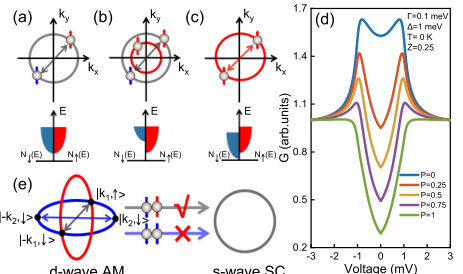
<figcaption class="paper-figure-caption"><b>Fig 1.</b> FIG. 1. (a) Normal metal with P = 0 has a spin-degenerate Fermi surface and symmetric density of states. (b) Conven- tional ferromagnet with 0 &lt; P &lt; 1 has one spin-polarized and one spin-degenerate band, leading to an asymmetric density of states at EF . (c) Half-metallic ferromagnet with P = 1 has only one spin-up band crossing the Fermi level. (d) Sim- ulated conductance curves for MPCS with different spin po- larizations. (e) Schematic illustration of Andreev reflection at the interface between a d–wave altermagnet and s–wave superconductor. The electrons at k and −k have the same spin except for the nodal region, resulting in the suppression of Andreev reflection across the interface.</figcaption>
</figure>
<figure class="paper-figure-card">
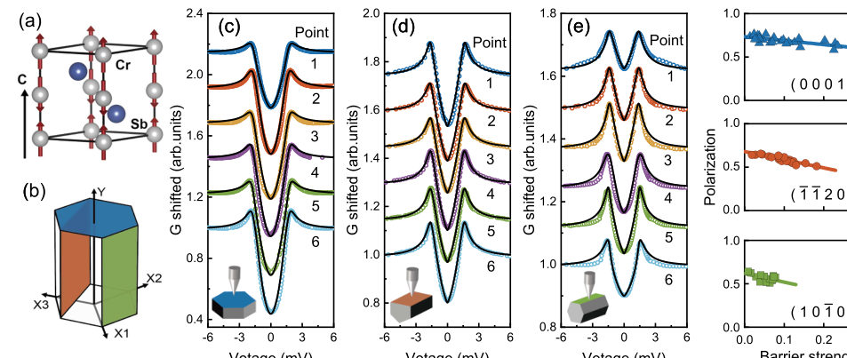
<figcaption class="paper-figure-caption"><b>Fig 2.</b> FIG. 2. (a) Schematic illustration of the crystal and magnetic structure of CrSb. (b) Different crystallographic planes for CrSb: blue (0 0 0 1), orange (1 1 2 0), and green (1 0 1 0). (c) Differential conductance curves G(V ) for six point contacts on CrSb crystals along the (0 0 0 1) direction, together with their optimal fits. (d) (1 1 2 0) plane, (e)(1 0 1 0) plane. The insets represent the MPCS configuration, where point-contacts were formed between the Nb tip and sample surface for each crystallographic plane. (f)-(h) momentum-dependent spin polarization Pk versus barrier strength Z for different contacts along three major orientations. The dashed lines are a guide to the eye.</figcaption>
</figure>
<figure class="paper-figure-card">
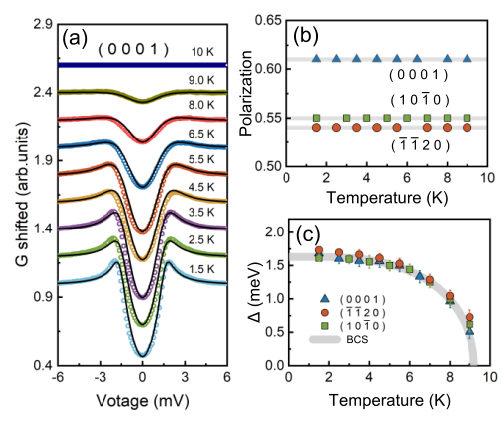
<figcaption class="paper-figure-caption"><b>Fig 3.</b> FIG. 3. (a) Conductance G(V) curves as a function of tem- perature for a point-contact on the (0 0 0 1) plane. (b) The extracted spin-polarization keeps constant with temperature for point-contacts in three major crystallographic planes. (c) Temperature dependence of the extracted Nb superconduct- ing gap ∆for point-contacts in three directions. The gray thick line is the expected BCS temperature behavior, and the extracted gaps ∆from all three major planes show a good agreement with the expectation.</figcaption>
</figure>
<figure class="paper-figure-card">
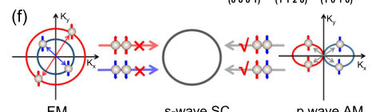
<figcaption class="paper-figure-caption"><b>Fig 4.</b> FIG. 5. (a) Top view of the calculated Fermi surface of CrSb. (b) Side view of the Fermi surface along the Γ–M direction. (c) Side view of the Fermi surface along the Γ–K direction. The topology and spin texture are characteristic of the g-wave altermagnetic symmetry. (d) Three-dimensional Brillouin zone (BZ) shows the high-symmetry points and the nodal planes are located at kz = nπ/c (n is an integer) and along the Γ–K directions. (e) Comparison between calculated and MPCS-determined momentum-dependent spin polarizations along different crystallographic directions. (f) Schematic il- lustration of Andreev reflection at the FM/SC and odd-parity AM/SC interface. Red and blue colors denote...</figcaption>
</figure>
<figure class="paper-figure-card">
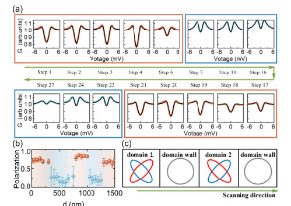
<figcaption class="paper-figure-caption"><b>Fig 5.</b> FIG. 4. (a) Spatial evolution of MPCS spectra measured at consecutive positions. (b) The extracted spin polarization values as a function of displacement suggest the existence of domains and domain walls. (c) Schematic illustration of the spin texture inside neighboring domains and the domain wall in between.</figcaption>
</figure>
</div>

<p><strong>Summary.</strong> This work uses mechanical point-contact spectroscopy to measure Andreev reflection signatures in the altermagnetic material $  ext{CrSb}$. The authors successfully quantify momentum-dependent spin polarizations ($P_k$) for different crystal planes, confirming the unique magnetic character of altermagnets. This establishes Andreev reflection as a novel technique for mapping $k$-dependent spin textures.</p>
<p><strong>Why it may be interesting.</strong> While focused on condensed matter magnetism, the use of superconducting contacts (Andreev reflection) to probe electronic spin textures is a powerful diagnostic tool relevant to open quantum systems where coupling to leads or environments dictates measurable quantities.</p>
<details>
<summary>Detailed structure</summary>
<p><strong>Main problem.</strong> To probe momentum-dependent spin polarization ($P_k$) in altermagnetic materials, which is crucial for next-generation spintronics but differs from conventional ferromagnets/antiferromagnets due to zero net magnetization.</p>
<p><strong>Main result.</strong> The study successfully measured finite and distinct values for $P_k$ ($\approx 73.4\%$ for (0001), $67.9\%$ for (-1-120), and $61.9\%$ for (10-10)) in $    ext{CrSb}$ along different planes.</p>
<p><strong>Method.</strong> Mechanical Point-Contact Spectroscopy (MPCS) was used to probe Andreev reflection on $  ext{CrSb}$ single crystals, supplemented by spatial line-scans.</p>
<p><strong>Model / system.</strong> The system is the altermagnetic candidate $ ext{CrSb}$, which exhibits $g$-wave spin splitting. The analysis relies on fitting differential conductance $G(V)$ using a modified BTK model to extract $P_k$.</p>
<p><strong>Key observables.</strong> Differential conductance $G(V)$, momentum-dependent spin polarization ($P_k$), domain size ($\approx 250-500\ 	ext{nm}$), and domain wall width ($\approx 250\ 	ext{nm}$).</p>
<p><strong>Important parameters / regimes.</strong> Low temperatures (down to $0.3\ 	ext{K}$), superconducting gap ($\Delta$), barrier strength ($Z$).</p>
<p><strong>Assumptions / limitations.</strong> The use of the modified BTK model and assuming that the extracted $P_k$ values are intrinsic properties independent of temperature or contact geometry.</p>
<p><strong>Figures summary.</strong> Figures illustrate spin polarization effects in various magnetic systems, show $G(V)$ spectra for three orientations with derived $P_k$, confirm temperature stability of $P_k$, and map out the domain structure via spatial line-scans.</p>
<p><strong>Paper structure.</strong> The paper establishes the scientific problem by introducing altermagnetism. It details the experimental setup using MPCS on $  ext{CrSb}$ to measure Andreev reflection signatures across three crystal planes, reports the quantitative $P_k$ values, and supports these findings with domain structure mapping.</p>
</details>
<details>
<summary>Abstract</summary>
<p>Altermagnetic materials have recently emerged as promising candidates for next-generation spintronic applications, characterized by the k-dependent spin-splitted band structure and a simultaneous zero-net-magnetization. Among them, altermagnetic candidate CrSb has attracted considerable attention, owing to its g-wave spin splitting and high Néel temperature. In this article, we employed mechanical point-contact spectroscopy (MPCS) with superconducting Nb tips to probe the Andreev reflection on CrSb single crystals along three principal crystallographic orientations. The extracted momentum-dependent spin polarizations are approximately 73.4% for the (0001) plane, 67.9% for the (-1-120) plane, and 61.9% for the (10-10) plane, respectively, distinct from conventional antiferromagnets. Furthermore, conductance spectra from spatial line-scans on the sample surface support the existence of altermagnetic domains with a characteristic size of 250-500 nm separated by domain-walls with width about 250 nm. These results strongly support the momentum-dependent spin polarization in altermagnetic CrSb and establish Andreev reflection as a new paradigm to probe k-dependent spin textures.</p>
</details>
<p><sub><a href="#top">↑ back to top</a></sub></p>

<p><a id="paper-2606.13454"></a></p>
<h3 id="optical-implementation-of-equilibrium-propagation-using-spatial-photonic-ising-machines"><a href="http://arxiv.org/abs/2606.13454v1">Optical Implementation of Equilibrium Propagation Using Spatial Photonic Ising Machines</a></h3>
<p><strong>Authors:</strong> Dimitri Vanden Abeele, Daniele Veraldi, Davide Pierangeli, Claudio Conti, Serge Massar<br>
<strong>Type:</strong> both · <strong>Category:</strong> disordered systems and neural networks · <strong>PDF:</strong> <a href="https://arxiv.org/pdf/2606.13454v1">https://arxiv.org/pdf/2606.13454v1</a><br>
<strong>Analysis basis:</strong> full PDF text, analyzed in chunks
<strong>Topic relevance:</strong> <code>analog quantum simulation</code> <strong>3/5</strong> · <code>exotic spin models in light-matter</code> <strong>3/5</strong> · <code>driven-dissipative phase transition</code> <strong>2/5</strong> · <code>methods for driven-dissipative</code> <strong>2/5</strong> · <code>quantum optics experiment</code> <strong>2/5</strong> · <code>QC/QI experiment</code> <strong>1/5</strong> · <code>correlated cavity matter</code> <strong>1/5</strong> · <code>interference shaping light</code> <strong>1/5</strong> · <code>spintronics-quantum-optics interface</code> <strong>1/5</strong></p>
<div class="figure-strip-hint">↔ Scroll figures horizontally</div>
<div class="paper-figures-scroll">
<figure class="paper-figure-card">
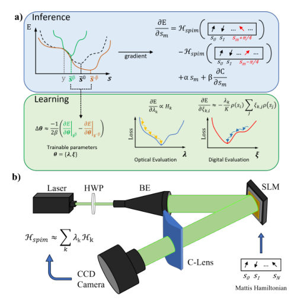
<figcaption class="paper-figure-caption"><b>Fig 1.</b> FIG. 1. (a) Equilibrium Propagation implemented using SPIM. EP follows a bi-level optimization. During infer- ence the energy is minimized using a combination of opti- cal measurements and digital terms. During learning the en- ergy landscape is modified to include the cost, correspond- ing to the additional force ±β∂C/∂sm. The trainable pa- rameters θ = {λ, ξ} are updated according to how the vari- ables conjugate to θ respond, at equilibrium, to the nudg- ing. The variables ∂E/∂λk are evaluated optically, while the variables ∂E/∂ξk,i are evaluated digitally. (b) Experimental setup. The SPIM evaluates the value of Mattis Hamiltonians Hk ∝1</figcaption>
</figure>
<figure class="paper-figure-card">
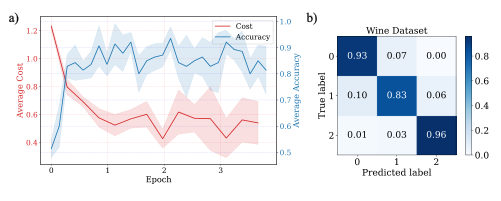
<figcaption class="paper-figure-caption"><b>Fig 2.</b> FIG. 2. Experimental Results. (a) Average cost and accu- racy over 7 independent training runs (4 epochs of 71 steps, 2 samples per step, moving average over 20 samples). (b) Av- erage confusion matrix of 7 independently trained networks, evaluated on the test set.</figcaption>
</figure>
<figure class="paper-figure-card">
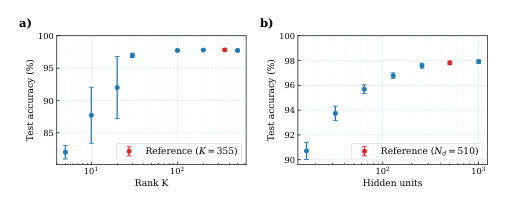
<figcaption class="paper-figure-caption"><b>Fig 3.</b> FIG. 3. Numerical simulations of EP using SPIM on the MNIST dataset. (a) Test accuracy versus rank K for Nd = 510. The maximum rank shown (K = 700) is larger than the theoretical maximum of 510. (b) Test accuracy versus the number of hidden units (Nd −10), with rank scaling as K ≈0.7Nd. The horizontal axis is logarithmic in both plots.</figcaption>
</figure>
<figure class="paper-figure-card">
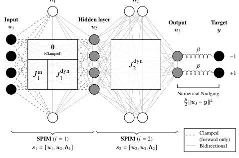
<figcaption class="paper-figure-caption"><b>Fig 4.</b> FIG. 4. Two-layer structured architecture. The network uses two SPIMs (l = 1, 2). Clamped inputs u1 are projected via Jin 1 , while remaining neurons couple through J1,2. Outputs u3 are nudged toward targets y.</figcaption>
</figure>
<figure class="paper-figure-card">
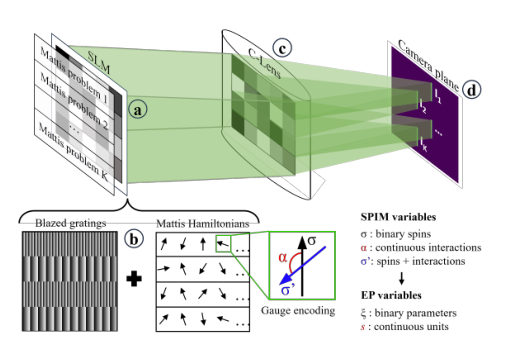
<figcaption class="paper-figure-caption"><b>Fig 5.</b> FIG. 5. Schematic of the focal plane division method to encode multiple Mattis problems simultaneously on a single SPIM. (a) The Spatial Light Modulator is used to encode a series of Mattis problems and blazed gratings onto the optical beam’s phase profile, while (b) exploiting gauge encoding for spins and interaction coefficients. (c) A cylindrical lens fo- cuses the propagating beam in the x-direction. The induced phase shift from the blazed gratings creates a set of distinct spots on the camera plane (d). The intensity of each spot provides the value of the corresponding Mattis Hamiltonian.</figcaption>
</figure>
</div>

<p><strong>Summary.</strong> The paper presents a novel method to implement Equilibrium Propagation, an advanced energy-based learning technique, using a Spatial Photonic Ising Machine. By encoding the required energy calculations optically via phase modulations on an SLM, they demonstrate a pathway toward ultra-low-power physical hardware for training neural networks. The results confirm high accuracy comparable to simulation benchmarks.</p>
<p><strong>Why it may be interesting.</strong> This work directly bridges concepts from statistical physics (Ising models, energy minimization) with modern machine learning paradigms (EP). The use of photonics to realize complex many-body interactions is highly relevant for quantum optics applications in computation.</p>
<details>
<summary>Detailed structure</summary>
<p><strong>Main problem.</strong> The primary goal is to demonstrate a low-energy, physical implementation of Equilibrium Propagation (EP), an energy-based learning framework, using optical hardware.</p>
<p><strong>Main result.</strong> The authors achieved high test accuracies on the MNIST dataset both experimentally and numerically, validating the viability of this hybrid optical-digital approach for machine learning training.</p>
<p><strong>Method.</strong> They employ a Spatial Photonic Ising Machine (SPIM) to optically evaluate the energy functional associated with EP. Gradient calculations are performed using finite difference schemes combined with digital processing.</p>
<p><strong>Model / system.</strong> The system uses SPIMs, which encode spins and couplings into the spatial degrees of freedom of coherent light propagating through a Spatial Light Modulator (SLM). The underlying physics involves calculating Ising-like Hamiltonians derived from the EP energy functional.</p>
<p><strong>Key observables.</strong> Test set accuracy (%) on MNIST/Wine datasets, average cost, and gradient components ($\partial E/\partial 	heta$).</p>
<p><strong>Important parameters / regimes.</strong> Trainable parameters include coupling strengths $\{J_{in}, J_{dyn}\}$ and pattern weights $\{\lambda_k, \xi_{k,i}\}$. Key regimes involve the rank $K$ of the Mattis problems and the number of hidden units $N_d$.</p>
<p><strong>Assumptions / limitations.</strong> The approach relies on approximating complex derivatives using finite differences (e.g., $\pm\pi/4$ phase shifts) and assumes that structured architectures can overcome limitations of simple all-to-all connectivity.</p>
<p><strong>Figures summary.</strong> Figures illustrate the EP process, the experimental SPIM setup, and show test accuracy scaling versus coupling rank $K$ or hidden units $N_d$ for MNIST simulations.</p>
<p><strong>Paper structure.</strong> The paper moves from defining the theoretical framework of EP (energy functional) to detailing the physical mapping onto the SPIM Hamiltonian. It then describes the hybrid optical-digital gradient calculation methods, validates performance on Wine experimentally, and finally presents extensive numerical results on MNIST across various parameter regimes.</p>
</details>
<details>
<summary>Abstract</summary>
<p>Equilibrium Propagation offers a compelling alternative to traditional machine learning for training energy-based networks. Here we demonstrate a hybrid optical-digital implementation of EP using a Spatial Photonic Ising Machine (SPIM). The SPIM exploits the gauge transformation method to optically encode both continuous neuron states and rank-1 binary trainable patterns as phase modulations via a spatial light modulator, with inference realized using a finite difference scheme. The experimental system is evaluated on the Wine classification dataset. The potential of this approach, including the use of continuous couplings and structured coupling matrices, is evaluated numerically on the more complex MNIST dataset. Our work provides a concrete pathway toward energy-efficient physical implementations of Equilibrium Propagation.</p>
</details>
<p><sub><a href="#top">↑ back to top</a></sub></p>

<p><a id="paper-2606.13377"></a></p>
<h3 id="steady-state-noise-signatures-of-lindbladian-exceptional-points"><a href="http://arxiv.org/abs/2606.13377v1">Steady-State Noise Signatures of Lindbladian Exceptional Points</a></h3>
<p><strong>Authors:</strong> Shihang Pan, Gianmichele Blasi, Géraldine Haack<br>
<strong>Type:</strong> theory · <strong>Category:</strong> other · <strong>PDF:</strong> <a href="https://arxiv.org/pdf/2606.13377v1">https://arxiv.org/pdf/2606.13377v1</a><br>
<strong>Analysis basis:</strong> full PDF text, analyzed in chunks
<strong>Topic relevance:</strong> <code>correlated / nonlocal dissipation</code> <strong>3/5</strong> · <code>driven-dissipative phase transition</code> <strong>3/5</strong> · <code>methods for driven-dissipative</code> <strong>3/5</strong> · <code>non-equilibrium dynamics</code> <strong>2/5</strong> · <code>non-equilibrium universality</code> <strong>2/5</strong> · <code>Keldysh / 2PI / non-Gaussian methods</code> <strong>1/5</strong> · <code>analog quantum simulation</code> <strong>1/5</strong> · <code>quantum measurements</code> <strong>1/5</strong></p>
<div class="figure-strip-hint">↔ Scroll figures horizontally</div>
<div class="paper-figures-scroll">
<figure class="paper-figure-card">
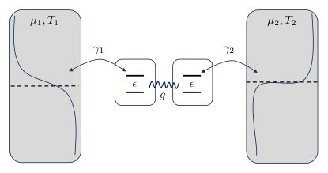
<figcaption class="paper-figure-caption"><b>Fig 1.</b> Figure 1: Sketch of a two-qubit system with the following parameters, bare energy of the two qubits ϵ, the inter-qubit coupling strength g, reservoirs characterized by their respective chemical potential and temperature µi, Ti, i = 1, 2 and bare bath-reservoir coupling strengths γ1 and γ2.</figcaption>
</figure>
<figure class="paper-figure-card">
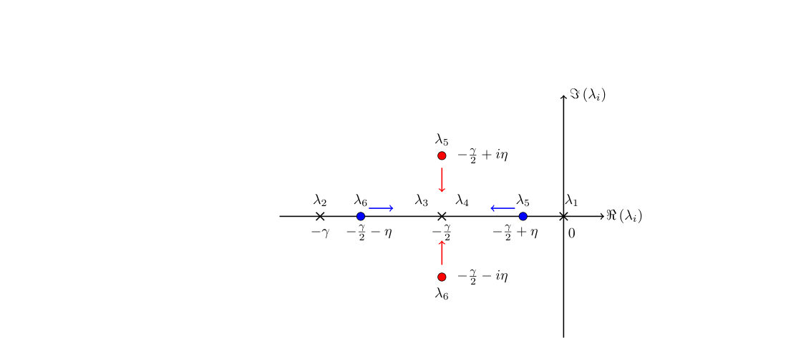
<figcaption class="paper-figure-caption"><b>Fig 2.</b> Figure 2: Spectrum of the reduced Lindbladian σ  ˜L  on a complex plane showing the coalescence of λ4, λ5 and λ6 at a third-order exceptional point. Color blue represents overdamped regime where η is real while red meas underdamped regime and we change η to iη.</figcaption>
</figure>
<figure class="paper-figure-card">
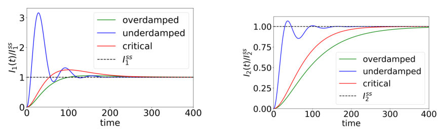
<figcaption class="paper-figure-caption"><b>Fig 3.</b> Figure 3: Currents as a function of time. 3a and 3b show the dynamics of I1 (t) and I2 (t) respectively. Both are normalized by their steady-state values. The initial steady is a product of thermal state. We choose the following set of parameters ξ = {ϵ = 1, γ1 = 0.05, γ2 = 0.01, T1 = 1, T2 = 0.5}. And the coupling strength g in each regime are gη2&gt;0 = ¯g/2 and gη2&lt;0 = 5¯g, where ¯g = |γ1 −γ2| /4 = 0.01 represents the value of g at exceptional point. In 3a, two inflexion points occur in both overdamped and ciritical regimes for current 1, while both Ioverdamped 2 and Icritical 2 monotonically grow as 3b shows.</figcaption>
</figure>
<figure class="paper-figure-card">

<figcaption class="paper-figure-caption"><b>Fig 4.</b> Figure 4: Steady-state noise as a function of the time delay τ. The four panels show the dynamics of Sss 11 (τ), Sss 12 (τ), Sss 21 (τ), and Sss 22 (τ). The delta function δ(τ) is treated as Kronecker delta δτ,0. We choose the following set of parameters ξ = {ϵ = 1, γ1 = 0.05, γ2 = 0.01, T1 = 1, T2 = 0.5}. And the coupling strength g in each regime are goverdamped = ¯g 2 and gunderdamped = 5¯g, where ¯g = |γ1−γ2|</figcaption>
</figure>
<figure class="paper-figure-card">
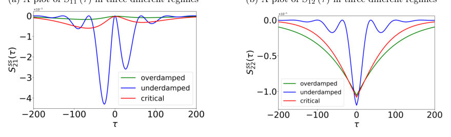
<figcaption class="paper-figure-caption"><b>Fig 5.</b> Figure 5 shows the shot noise as a function of g/g∗, where g∗denotes the critical coupling corre- sponding to the exceptional point. As the system is tuned across this point, the shot noise remains a smooth function, with no discontinuities or cusps. Hence, EP does not have a signature in the zero-frequency component of the spectral function of current correlations. However, as demonstrated in the previous section, the analytic properties of the finite-frequency expression provide information about the order of existing EPs.</figcaption>
</figure>
</div>

<p><strong>Summary.</strong> This theoretical work demonstrates that while average currents do not reveal the signatures of Exceptional Points (EPs) in steady-state open quantum systems, current noise correlation functions do. By analyzing these higher-order correlations using a two-qubit model, the authors show that the spectral structure of the noise clearly distinguishes between different dynamical regimes defined by the proximity to an EP.</p>
<p><strong>Why it may be interesting.</strong> This is highly relevant to AMO physics and open quantum systems as it provides a powerful, non-trivial diagnostic tool (noise spectroscopy) to probe fundamental degeneracies (EPs) in dissipative dynamics where standard measurements fail.</p>
<details>
<summary>Detailed structure</summary>
<p><strong>Main problem.</strong> The work aims to find diagnostic signatures of Lindbladian Exceptional Points (LEPs) in the steady-state regime of open quantum systems, as average observables fail to reveal this structure.</p>
<p><strong>Main result.</strong> Current noise correlation functions retain clear signatures of LEPs in the steady state, distinguishing them from the behavior of average currents. The coalescence of eigenvalues leads to distinct polynomial time dependencies in the noise spectrum across different dynamical regimes (overdamped, underdamped, critical).</p>
<p><strong>Method.</strong> The authors derive general expressions for two-point current correlation functions within a Lindblad master equation framework and analyze their spectral properties.</p>
<p><strong>Model / system.</strong> The study uses open quantum systems modeled by the Lindblad master equation, exemplified by two interacting qubits coupled to external reservoirs. The dynamics are analyzed via spectral decomposition of the Liouvillian superoperator into Jordan normal form.</p>
<p><strong>Key observables.</strong> Two-point current correlation function (noise), steady-state average currents, and the frequency spectrum of the noise $S^s_{\alpha\alpha'}(\omega)$.</p>
<p><strong>Important parameters / regimes.</strong> The coupling strength $g$ relative to a critical value $g^*$, which dictates the system's dynamical regime (overdamped, underdamped, or critical).</p>
<p><strong>Assumptions / limitations.</strong> The analysis assumes that local jump operators correctly capture the dynamics and relies on spectral decomposition techniques for solving the master equation.</p>
<p><strong>Figures summary.</strong> Figures illustrate the distinct temporal structures of steady-state noise functions across overdamped, underdamped, and critical regimes. One figure shows the spectrum of a reduced Liouvillian exhibiting coalescence at an EP.</p>
<p><strong>Paper structure.</strong> The paper establishes the theoretical framework using the Lindblad equation, derives expressions for both average currents and current noise, analyzes these observables in the steady state, and finally illustrates the distinct signatures of LEPs by analyzing the two-qubit model across different coupling regimes.</p>
</details>
<details>
<summary>Abstract</summary>
<p>Exceptional points (EPs) are non-Hermitian degeneracies at which two or more eigenvalues and their corresponding eigenvectors coalesce. In open quantum systems, exceptional points can arise in the Lindbladian governing the dissipative dynamics. Their signatures have so far been mainly identified in finite-time observables, such as transient currents, while steady-state average currents generally provide no direct evidence of the underlying exceptional-point structure. In this work, we demonstrate that signatures of Lindbladian EPs can nevertheless be accessed in the steady-state regime through current noise. We derive general expressions for current correlation functions within a Lindblad master-equation framework and show, in particular, how exceptional points affect their behaviour as a function of the time delay. We illustrate these results with the paradigmatic example of two interacting qubits coupled to two reservoirs, where the steady-state noise clearly distinguishes overdamped, underdamped, and critical regimes. Our results establish current correlation functions as a steady-state probe of Lindbladian EPs in open quantum systems.</p>
</details>
<p><sub><a href="#top">↑ back to top</a></sub></p>

<p><a id="paper-2606.12755"></a></p>
<h3 id="certifying-nonclassical-proper-time-histories-with-a-quantum-clock"><a href="http://arxiv.org/abs/2606.12755v1">Certifying Nonclassical Proper-Time Histories with a Quantum Clock</a></h3>
<p><strong>Authors:</strong> Shuai Zeng<br>
<strong>Type:</strong> theory · <strong>Category:</strong> other · <strong>PDF:</strong> <a href="https://arxiv.org/pdf/2606.12755v1">https://arxiv.org/pdf/2606.12755v1</a><br>
<strong>Analysis basis:</strong> full PDF text, analyzed in chunks
<strong>Topic relevance:</strong> <code>quantum measurements</code> <strong>3/5</strong> · <code>QC/QI experiment</code> <strong>2/5</strong> · <code>entanglement &amp; information structure</code> <strong>2/5</strong> · <code>measurement-induced transitions</code> <strong>2/5</strong> · <code>analog quantum simulation</code> <strong>1/5</strong> · <code>driven-dissipative phase transition</code> <strong>1/5</strong> · <code>interference shaping light</code> <strong>1/5</strong> · <code>methods for driven-dissipative</code> <strong>1/5</strong> · <code>non-equilibrium dynamics</code> <strong>1/5</strong> · <code>quantum optics experiment</code> <strong>1/5</strong></p>
<div class="figure-strip-hint">↔ Scroll figures horizontally</div>
<div class="paper-figures-scroll">
<figure class="paper-figure-card">
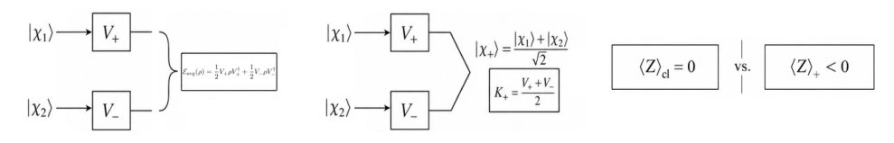
<figcaption class="paper-figure-caption"><b>Fig 1.</b> Figure 1: Classical mixtures and selective erasure of proper-time histories. (a) Two motional branches |χ1⟩, |χ2⟩ label the specified proper-time histories V± = U±R U±, with U± = e∓iθZ/2. If the motional label is ignored, the clock sees the free mixture Eavg ∈CPTH(H2). (b) Measuring the motion in the history-erasing basis produces the bright port K+ = (V+ + V−)/2, while the orthogonal erasing outcome gives the dark port K−= (V+ −V−)/2. The witness depends on erasing this proper-time-history label. (c) For input |g⟩, every free mixture of the specified histories predicts ⟨Z⟩cl = 0, while the bright port yields the negative imbalance in Eq. (20); the complementary dark-port signal is...</figcaption>
</figure>
</div>

<p><strong>Summary.</strong> The paper develops a rigorous method to certify nonclassical proper-time histories in quantum clocks by treating the problem as a channel-certification task. It proves that coherent recombination of distinct history paths generates an observable signal that cannot be reproduced by classical mixtures of those same histories. This provides a fundamental, resource-theoretic test for probing relativistic time effects beyond simple dephasing measurements.</p>
<p><strong>Why it may be interesting.</strong> This work provides a powerful, generalizable quantum resource theory tool—channel certification—applied directly to fundamental physics measurements (time dilation), bridging foundational quantum information concepts with cutting-edge AMO metrology.</p>
<details>
<summary>Detailed structure</summary>
<p><strong>Main problem.</strong> The core problem is developing a rigorous method to experimentally certify that quantum proper-time histories, imprinted on clock signals by relativistic effects, are genuinely nonclassical and cannot be simulated by classical mixtures of specified history outcomes.</p>
<p><strong>Main result.</strong> A Choi-rank separation criterion, demonstrated via a minimal two-branch Ramsey protocol, proves that the conditioned operation associated with coherent recombination of distinct proper-time histories falls outside the convex set of classically simulable channels ($  ext{CPTH}(H)$).</p>
<p><strong>Method.</strong> The authors employ channel-certification techniques by comparing the measured conditional signal against the theoretical prediction for classical mixtures. They utilize a two-branch Ramsey protocol and develop resource-theoretic diagnostics like the robustness measure $  ext{RH}_{   ext{PTH}}(\Phi)$.</p>
<p><strong>Model / system.</strong> The physical system is based on precision quantum clocks, such as trapped-ion optical clocks, where relativistic time dilation phases are imprinted during clock evolution. The theoretical framework models the process using history unitaries ($V_h$) and analyzes the resulting channel structure.</p>
<p><strong>Key observables.</strong> Nonzero postselected imbalance ($\langle Z 
angle_+ 
eq 0$), which serves as a witness distinguishing quantum from classical processes; visibility factors $\eta_{tot} = \eta_h\eta_c\eta_m$.</p>
<p><strong>Important parameters / regimes.</strong> The effective accumulated phase $   heta_{eff}$ and the fidelity parameters ($\eta_h, \eta_c, \eta_m$) that quantify experimental imperfections.</p>
<p><strong>Assumptions / limitations.</strong> The certification is operational and relative only to a finite, specified set of proper-time histories ($H$). The analysis relies on identifying single-Kraus, subnormalized-unitary outcomes for the strongest theoretical bounds.</p>
<p><strong>Figures summary.</strong> Figures illustrate the comparison between the predicted classical signal ($\langle Z 
angle_{	ext{cl}} = 0$) and the measured non-zero signals from the Ramsey protocol, demonstrating the separation boundary.</p>
<p><strong>Paper structure.</strong> The paper progresses by establishing a hierarchy of classical limitations (single-time dephasing $ o$ averaged histories $ o$ conditioned recombination). It then introduces the Choi-rank criterion using a minimal two-branch witness and concludes with resource-theoretic visibility models to quantify experimental feasibility.</p>
</details>
<details>
<summary>Abstract</summary>
<p>Quantum clocks can acquire relativistic phases from motional or gravitational proper-time differences, but reduced clock dephasing alone does not certify nonclassical proper-time histories. We formulate this distinction as a channel-certification problem. First, we show that any two-level single-time dephasing signal, including one generated by an effective quantum proper-time label, admits a classical random proper-time representation. We then define the convex set of classical mixtures of experimentally specified proper-time histories and prove a Choi-rank separation criterion for conditioned coherent history recombination. A two-branch Ramsey protocol gives explicit bright- and dark-port population witnesses outside this classical set. The certification is operational and relative to the specified history set: it rules out classical mixtures of the same implemented proper-time histories, not arbitrary classical protocols with different histories or controls.</p>
</details>
<p><sub><a href="#top">↑ back to top</a></sub></p>

<p><a id="paper-2606.13651"></a></p>
<h3 id="engineering-electrically-switchable-quantum-anomalous-hall-states-by-spin-orbit-coupling"><a href="http://arxiv.org/abs/2606.13651v1">Engineering electrically-switchable quantum anomalous Hall states by spin-orbit coupling</a></h3>
<p><strong>Authors:</strong> Maosen Qin, Ziwei Wang, Gyeongmin Kim, Kenji Watanabe, Takashi Taniguchi, Steven H. Simon, Siddharth A. Parameswaran, Hryhoriy Polshyn<br>
<strong>Type:</strong> both · <strong>Category:</strong> strongly correlated electrons · <strong>PDF:</strong> <a href="https://arxiv.org/pdf/2606.13651v1">https://arxiv.org/pdf/2606.13651v1</a><br>
<strong>Analysis basis:</strong> full PDF text, analyzed in chunks
<strong>Topic relevance:</strong> <code>exotic spin models in light-matter</code> <strong>3/5</strong> · <code>spintronics-quantum-optics interface</code> <strong>3/5</strong> · <code>analog quantum simulation</code> <strong>2/5</strong> · <code>driven-dissipative phase transition</code> <strong>2/5</strong> · <code>Keldysh / 2PI / non-Gaussian methods</code> <strong>1/5</strong> · <code>Kondo &amp; dissipative impurity</code> <strong>1/5</strong> · <code>methods for driven-dissipative</code> <strong>1/5</strong> · <code>non-equilibrium dynamics</code> <strong>1/5</strong></p>
<div class="figure-strip-hint">↔ Scroll figures horizontally</div>
<div class="paper-figures-scroll">
<figure class="paper-figure-card">
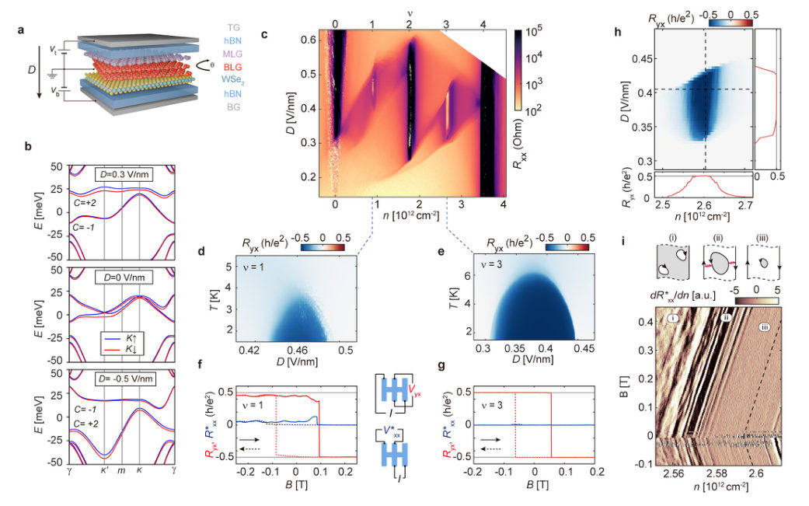
<figcaption class="paper-figure-caption"><b>Fig 1.</b> FIG. 1. Quantized anomalous Hall (QAH) effect in tMBG/WSe2 device with θ = 1.23◦(D2). a, Schematic of a tMBG/WSe2 device consisting of rotationally misaligned monolayer graphene(MLG) and Bernal-stacked bilayer graphene(BLG) placed on a monolayer WSe2, encapsulated by hexagonal boron nitride (hBN). Top and bottom graphite gates control carrier density n and displacement field D. b, Calculated band structure of tMBG/WSe2 with proximity-induced Ising spin-orbit coupling of λI = 4 meV at D = 0.3, 0 and -0.5 V/nm. c, Longitudinal resistance Rxx measured in the conduction band at 50 mT and D &gt; 0. Sharp dips in Rxx at ν = 1 and 3 mark QAH states surrounded by higher-resistance metallic isospin-...</figcaption>
</figure>
<figure class="paper-figure-card">
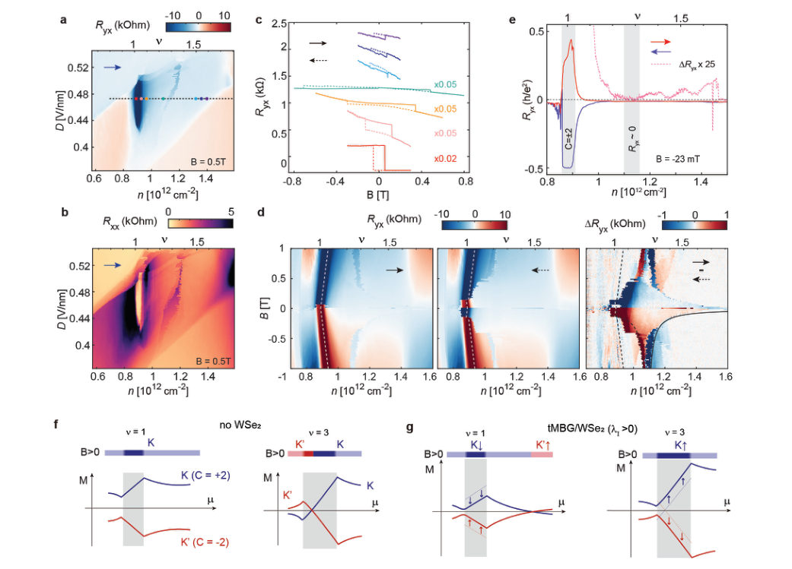
<figcaption class="paper-figure-caption"><b>Fig 2.</b> FIG. 2. Magnetization reversal and nonvolatile electrical switching near ν = 1 QAH state in device D2. a,b, Ryx (a) and Rxx (b) as a function of n and D, measured at B= 0.5 T. The fast sweep axis is n, with the direction indicated by arrows. In addition to QAH state at ν = 1, a sharp change of the resistance at intermediate fillings near ν ≈1.2 −1.3 marks voltage-induced switching between magnetic states. c, Magnetic hysteresis of Ryx measured at D = 0.47 V/nm and n=1.40, 1.36, 1.32, 1.08, 0.96, 0.93, 0.89 ×1012cm−2, as indicated in a. Curves are offset and scaled for clarity, as indicated. d, Ryx measured as a function of B at D = 0.47 V/nm for opposite n sweep directions as indicated in...</figcaption>
</figure>
<figure class="paper-figure-card">
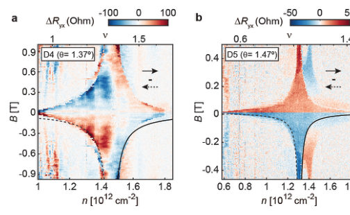
<figcaption class="paper-figure-caption"><b>Fig 3.</b> FIG. 3. Gate-driven magnetic state switching in tMBG/WSe2 devices with higher twist angles. a, b, The difference between Ryx measured with two oppo- site n-sweep directions, ∆Ryx, in tMBG/WSe2 devices D4 (θ = 1.37◦) and D5 (θ = 1.47◦). Here, Ryx is antisymmetrized with respect to B. Device D4 is measured at D = 0.57 V/nm, whereas in D5, D spans 0.48 −0.63 V/nm, as indicated in Fig. E8. Solid and dashed hyperbolic lines near the MR tran- sitions are guides to the eye following B ∼1/(n−nrev), where nrev is the carrier density at which MR occurs.</figcaption>
</figure>
<figure class="paper-figure-card">
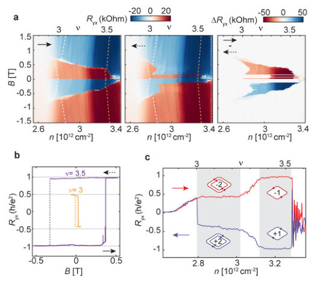
<figcaption class="paper-figure-caption"><b>Fig 4.</b> FIG. 4. Gate-tunable Chern number in electrically switchable QAH states in tMBG. a, Ryx measured as a function of n and B in device D6, which does not contain WSe2(1.27◦), at D = 0.46 V/nm. The left and middle subpan- els show the resistance measured for different n-sweep direc- tions, while the right one plots the difference, ∆Ryx. Dashed lines originating from ν = 3 and 3.5 have slopes expected for Chern insulators with C = ±2 and C = ±1, respectively. b, QAH states at ν = 3 and ν = 3.5 in D6 evidenced by the quan- tized hysteresis of Ryx. c, Nonvolatile gate-driven switching of the magnetic state at B = 25 mT. Each magnetic state can be additionally gate-tuned between two plateaus...</figcaption>
</figure>
</div>

<p><strong>Summary.</strong> The research demonstrates that coupling twisted bilayer graphene with WSe2 induces strong Spin-Orbit Coupling (SOC), enabling the realization of robust, electrically switchable Quantum Anomalous Hall states. By controlling this SOC, researchers can engineer the magnetic state and tune the system between different topological regimes ($C=\pm 2$ to $C=\pm 1$) using gate voltages. This work establishes a powerful methodology for designing next-generation topological electronic devices.</p>
<p><strong>Why it may be interesting.</strong> This work provides a concrete example of how engineered proximity effects (SOC) can be used in 2D materials to stabilize topological phases and enable electrical control over fundamental quantum properties like chirality, which is highly relevant for designing novel spintronic/topological devices.</p>
<details>
<summary>Detailed structure</summary>
<p><strong>Main problem.</strong> The research aims to engineer electrically-switchable Quantum Anomalous Hall (QAH) states in graphene moiré systems by controlling their magnetic properties.</p>
<p><strong>Main result.</strong> Proximity coupling to WSe2 induces Spin-Orbit Coupling (SOC), which allows for the engineering of robust, nonvolatile QAH states and enables tuning between different Chern numbers without resetting the magnetic state.</p>
<p><strong>Method.</strong> The study combines transport measurements (measuring Hall/longitudinal resistance) with theoretical modeling using continuum Hamiltonians and self-consistent Hartree-Fock calculations to analyze spin and orbital magnetization.</p>
<p><strong>Model / system.</strong> The physical platform is twisted bilayer graphene (tMBG) interfaced with WSe2. The model incorporates the Bistritzer-MacDonald framework, adding proximity-induced Ising SOC ($\lambda_I$) and analyzing electron interactions via Hartree-Fock mean-field theory.</p>
<p><strong>Key observables.</strong> Quantized Hall resistance ($R_{yx}$), longitudinal resistance ($R_{xx}$), magnetic hysteresis loops, Chern numbers ($C=\pm 2, \pm 1$), and orbital/spin magnetization components.</p>
<p><strong>Important parameters / regimes.</strong> Twist angle ($  heta \approx 1.1 - 1.5^\circ$), carrier density ($
u$), gate voltage displacement field ($D$), and the strength of the induced SOC ($\lambda_I$).</p>
<p><strong>Assumptions / limitations.</strong> The analysis assumes that proximity-induced SOC dominates over intrinsic magnetic energy in certain regimes, allowing for controlled switching between spin/valley polarized ground states.</p>
<p><strong>Figures summary.</strong> Figures show quantized QAH plateaus ($R_{yx}$), gate-driven magnetic hysteresis loops demonstrating state switching, and theoretical plots illustrating the dependence of total magnetization on filling factor ($
u$) and SOC strength.</p>
<p><strong>Paper structure.</strong> The paper progresses from establishing the physical platform (tMBG/WSe2) to confirming the key mechanism (SOC via quantum oscillations), demonstrating the primary effect (quantized QAH states and switching), and finally detailing the theoretical underpinning of magnetization control through spin-valley coupling.</p>
</details>
<details>
<summary>Abstract</summary>
<p>Nonvolatile gate-driven switching of quantum anomalous Hall (QAH) states in graphene moiré systems provides a promising route toward topological electronics based on chiral edge states. However, deliberate use of this switching mechanism requires control over both the magnetic properties and metastability of QAH states. While previous demonstrations mostly relied on the intrinsic magnetic energy landscape of moiré devices, here we show that this landscape can be engineered through proximity coupling to WSe2. We find that proximitizing twisted monolayer-bilayer graphene by WSe2 reshapes the magnetization reversals responsible for nonvolatile electrical switching of QAH states. We attribute this effect to the proximity-induced spin-orbit coupling (SOC), which can lock spin and valley and modify the magnetization of the competing states involved in switching compared with non-proximitized graphene systems. Our findings establish proximity-induced SOC as a new way to engineer magnetic properties and switchable magnetic states in graphene-based systems. We further demonstrate that strong magnetic metastability in tMBG allows the magnetic states to be gate-tuned between QAH and metallic regimes, and between QAH states with Chern numbers |C| = 2 and 1 without resetting the magnetic state. This functionality points toward new device architectures based on QAH chiral edge states.</p>
</details>
<p><sub><a href="#top">↑ back to top</a></sub></p>

<p><a id="paper-2606.13641"></a></p>
<h3 id="generalized-two-qubit-hamiltonian-for-projective-quantum-feature-maps"><a href="http://arxiv.org/abs/2606.13641v1">Generalized two-qubit Hamiltonian for Projective Quantum Feature Maps</a></h3>
<p><strong>Authors:</strong> Rafael Simões do Carmo, Edson Amaro Junior, Felipe Fanchini<br>
<strong>Type:</strong> experiment · <strong>Category:</strong> disordered systems and neural networks · <strong>PDF:</strong> <a href="https://arxiv.org/pdf/2606.13641v1">https://arxiv.org/pdf/2606.13641v1</a><br>
<strong>Analysis basis:</strong> full PDF text, analyzed in chunks
<strong>Topic relevance:</strong> <code>analog quantum simulation</code> <strong>3/5</strong> · <code>exotic spin models in light-matter</code> <strong>3/5</strong> · <code>QC/QI experiment</code> <strong>2/5</strong> · <code>quantum measurements</code> <strong>2/5</strong> · <code>entanglement &amp; information structure</code> <strong>1/5</strong> · <code>measurement-induced transitions</code> <strong>1/5</strong> · <code>methods for driven-dissipative</code> <strong>1/5</strong> · <code>spintronics-quantum-optics interface</code> <strong>1/5</strong></p>
<div class="figure-strip-hint">↔ Scroll figures horizontally</div>
<div class="paper-figures-scroll">
<figure class="paper-figure-card">
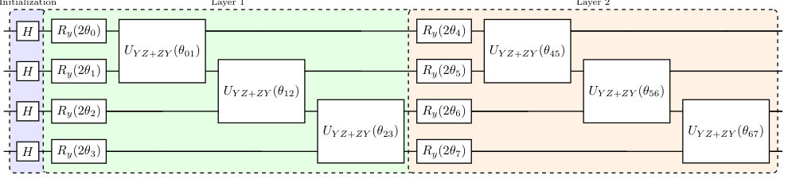
<figcaption class="paper-figure-caption"><b>Fig 1.</b> Figure 1: Circuit representation of a CD-Ising-glass with eight features mapped onto a four-qubit register. After initialization with Hadamard gates, each encoding layer applies local rotations Ry(2θi) followed by two-qubit interaction blocks UY Z+ZY (θij). The local angles encode the one-body fields hi, which are assigned from normalized classical input features, while the interaction angles encode the couplings Jij, obtained from pairwise feature correlations, here estimated through mutual information, as defined in Eq. 20. The multilayer structure enables multi-feature encoding on a fixed qubit register by assigning different feature blocks to successive encoding layers. The feature...</figcaption>
</figure>
<figure class="paper-figure-card">
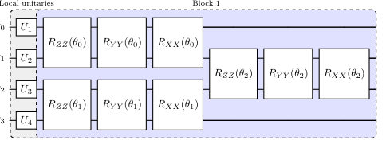
<figcaption class="paper-figure-caption"><b>Fig 2.</b> Figure 2: Example of the 4-qubit encoding 3 features using Heisenberg PQFM. Each qubit first undergoes a local Haar- random unitary transformation, denoted by U1, . . . , U4. The entangling stage, grouped here as Block 1, then applies the sequence of two-qubit rotations RZZ, RY Y , and RXX to the disjoint pairs (q0, q1) and (q2, q3), followed by the same se- quence on the central pair (q1, q2). More blocks can be added for encoding more features. The corresponding rotation an- gles are denoted by θ0, θ1, and θ2, where θi = 2γηi, γ is a scaling parameter, and ηi is defined in Eq. 24.</figcaption>
</figure>
<figure class="paper-figure-card">
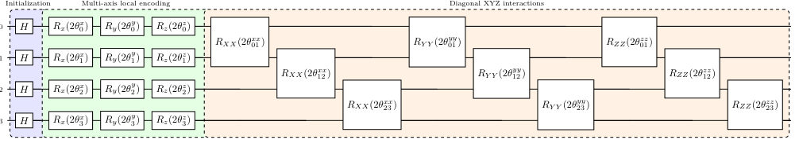
<figcaption class="paper-figure-caption"><b>Fig 3.</b> Figure 3: Circuit representation of a of a single-layer diagonal XYZ PQFM with twelve features mapped onto a four-qubit register by a multi-axis feature encoding. After Hadamard initialization, each qubit receives three local rotations, Rx, Ry, and Rz, allowing three distinct normalized classical features to be encoded per qubit through the active Pauli axes. The subsequent two-qubit rotations implement the diagonal interaction channels XX, Y Y , and ZZ, with angles determined by mutual-information coefficients between the features assigned to the corresponding qubit-axis slots. The nearest-neighbor chain shown here is illustrative; in the hardware-aware implementation, the interaction...</figcaption>
</figure>
<figure class="paper-figure-card">
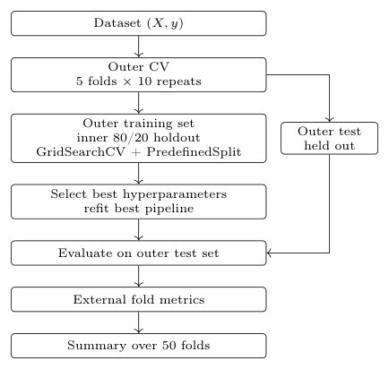
<figcaption class="paper-figure-caption"><b>Fig 4.</b> Figure 4: Nested validation protocol used for model selection and external performance estimation.</figcaption>
</figure>
<figure class="paper-figure-card">
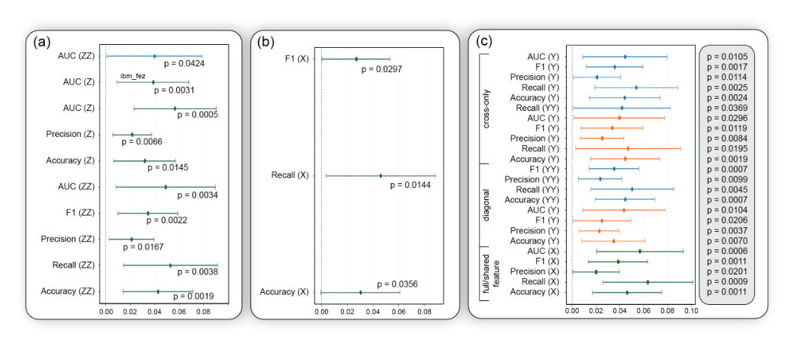
<figcaption class="paper-figure-caption"><b>Fig 5.</b> Figure 5: Paired statistical improvements over the classical baseline for the Molecular Toxicity dataset. Panel (a) shows the CD-Ising-glass PQFM, panel (b) the Heisenberg map, and panel (c) the XYZ feature-map family introduced in this work. The plotted intervals correspond to the mean paired deltas and 95% confidence intervals. Colors indicate the qubit budget used in each configuration, with blue, orange, and green corresponding to 52, 78, and 156 qubits, respectively. The labels in parentheses indicate the measured observable used to extract the corresponding quantum features. Unless otherwise annotated, results correspond to ibm_kingston; panel (b) uses ibm_marrakesh.</figcaption>
</figure>
</div>

<p><strong>Summary.</strong> The paper proposes and rigorously tests generalized two-qubit Hamiltonian Projected Quantum Feature Maps (PQFMs) as an advanced method to encode classical data features onto quantum circuits. By allowing multiple feature encodings per qubit axis, the framework increases information density while remaining hardware-compatible. The results demonstrate that these generalized maps offer a promising pathway for achieving measurable performance gains in quantum machine learning tasks.</p>
<p><strong>Why it may be interesting.</strong> This work bridges condensed matter physics concepts (Hamiltonian engineering, spin models) with applied machine learning, providing a concrete framework for mapping complex physical interactions into feature spaces relevant for near-term quantum computation benchmarking.</p>
<details>
<summary>Detailed structure</summary>
<p><strong>Main problem.</strong> The core problem is generating high-quality, explicit classical features from quantum states using quantum processors for use in classical machine learning models.</p>
<p><strong>Main result.</strong> A generalized two-qubit Hamiltonian family of Projected Quantum Feature Maps (PQFMs) provides a promising and consistent route toward achieving statistically supported gains over matched classical baselines on biomedical datasets.</p>
<p><strong>Method.</strong> The authors construct PQFMs by defining data-dependent Hamiltonians that evolve the quantum state, followed by measuring local Pauli expectation values to extract explicit classical features.</p>
<p><strong>Model / system.</strong> The models are based on generalized two-qubit Hamiltonian structures (e.g., XYZ type) applied to qubits, extending previous work like CD-Ising-glass and Heisenberg maps. The feature encoding allows for multi-axis assignment of classical variables onto the Pauli axes of the qubits.</p>
<p><strong>Key observables.</strong> Local single-qubit ($\langle \sigma^a_j 
angle$) and two-qubit ($\langle \sigma^a_j \sigma^b_k 
angle$) Pauli expectation values, which form the explicit classical feature vector $x'$.</p>
<p><strong>Important parameters / regimes.</strong> The analysis is performed across multiple biomedical datasets (e.g., Molecular Toxicity, Breast Cancer), varying qubit counts (up to 156), and different Hamiltonian structures (diagonal, cross-axis, full).</p>
<p><strong>Assumptions / limitations.</strong> Performance gains are shown to be highly dependent on the specific dataset, the chosen encoding strategy, the measured observables, and the underlying hardware conditions.</p>
<p><strong>Figures summary.</strong> Figures illustrate circuit representations of PQFMs for various qubit counts and feature map types (e.g., single-layer diagonal XYZ PQFM). Tables summarize quantitative performance metrics (AUC, F1) across multiple datasets and QPU architectures.</p>
<p><strong>Paper structure.</strong> The paper introduces the generalized Hamiltonian framework, details multi-axis encoding strategies, benchmarks these maps against established methods on several biomedical classification tasks using nested cross-validation, and concludes by assessing empirical quantum utility.</p>
</details>
<details>
<summary>Abstract</summary>
<p>Projected quantum feature maps provide a strategy for using quantum processors as feature generators for classical machine-learning models. Building on counterdiabatic Ising-glass and one-dimensional Heisenberg PQFMs, we introduce a generalized two-qubit Hamiltonian-based PQFM that provides a unified way to encode classical features through local Pauli fields and pairwise two-qubit Pauli interactions. This construction allows distinct classical variables to be embedded along different Pauli axes of the same qubit, increasing the information density of shallow circuits while remaining compatible with hardware constraints. We develop and implement these methods in pqfmlib, a publicly available Python library for constructing, executing, and benchmarking Hamiltonian-based PQFMs.We then benchmark the generalized Hamiltonian PQFMs against reference PQFMs on four biomedical classification datasets under a nested cross-validation protocol with paired statistical tests. Quantum features are generated using both IBM quantum processors with up to 156 qubits and statevector simulations. Our results show that the generalized two-qubit Hamiltonian family provides the most consistent pattern of statistically supported gains over matched classical baselines, although the performance of all methods depends on the dataset, encoding strategy, measured observables, and hardware conditions. These findings support generalized Hamiltonian PQFMs as a promising route toward near-term quantum utility.</p>
</details>
<p><sub><a href="#top">↑ back to top</a></sub></p>

<p><a id="paper-2606.13498"></a></p>
<h3 id="population-dynamics-of-surface-mediated-autocatalytic-processes"><a href="http://arxiv.org/abs/2606.13498v1">Population dynamics of surface-mediated autocatalytic processes</a></h3>
<p><strong>Authors:</strong> Denis S. Grebenkov, Yilin Ye<br>
<strong>Type:</strong> theory · <strong>Category:</strong> statistical mechanics · <strong>PDF:</strong> <a href="https://arxiv.org/pdf/2606.13498v1">https://arxiv.org/pdf/2606.13498v1</a><br>
<strong>Analysis basis:</strong> full PDF text, analyzed in chunks
<strong>Topic relevance:</strong> <code>driven-dissipative phase transition</code> <strong>3/5</strong> · <code>methods for driven-dissipative</code> <strong>3/5</strong> · <code>Keldysh / 2PI / non-Gaussian methods</code> <strong>2/5</strong> · <code>non-equilibrium universality</code> <strong>2/5</strong> · <code>analog quantum simulation</code> <strong>1/5</strong> · <code>correlated / nonlocal dissipation</code> <strong>1/5</strong> · <code>correlated cavity matter</code> <strong>1/5</strong> · <code>non-equilibrium dynamics</code> <strong>1/5</strong></p>
<div class="figure-strip-hint">↔ Scroll figures horizontally</div>
<div class="paper-figures-scroll">
<figure class="paper-figure-card">
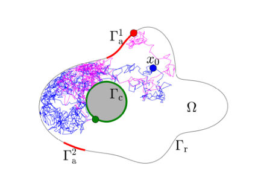
<figcaption class="paper-figure-caption"><b>Fig 1.</b> FIG. 1. A schematic view of a confining domain Ω, whose boundary ∂Ωis partitioned into three subsets: an absorbing region Γa (in red) that can destroy each arrived particle with an absorption rate qa via A →∅; an inert region Γr (in gray) that reflects particles back into Ω; and a catalytic region Γc that can replicate each arrived particle into two independent copies with a catalytic rate qc via A →2A. Each of three subsets can be composed of multiple disconnected pieces (e.g., Γa = Γ1 a ∪Γ2 a). Two simulated trajectories are shown in blue and magenta: the first particle is released from a point x0 (blue dot) and diffuses until its binary branching (green dot) on Γc; after this branching...</figcaption>
</figure>
<figure class="paper-figure-card">
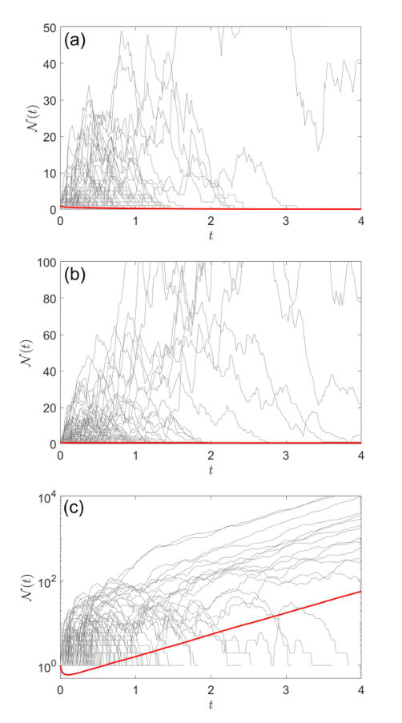
<figcaption class="paper-figure-caption"><b>Fig 2.</b> FIG. 2. 1000 random realizations (gray curves) of the popu- lation dynamics in the circular annulus with R = 0.1, L = 1, D = 1, qa = ∞, uniform starting point in the bulk, and three values of qc: 3.91 (a), 4.34 (b), and 4.78 (c). Solid red line shows the empirical mean (obtained over 105 realizations, see Appendix B). In the last panel, the logarithmic scale of the vertical axis results is cutting zero values.</figcaption>
</figure>
<figure class="paper-figure-card">
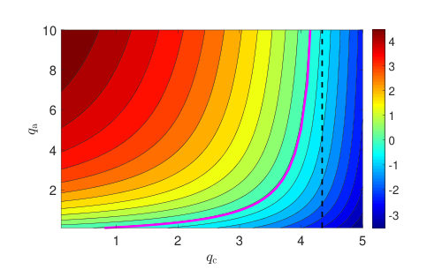
<figcaption class="paper-figure-caption"><b>Fig 3.</b> FIG. 3. Contour plot of the principal eigenvalue λ− 0 as a function of qc and qa for the circular annulus with R = 0.1 and L = 1. The vertical dashed line presents qcrit c from Eq. (F6), while thick magenta line shows the critical line qc = µ0(qa) that separates the subcritical regime (λ− 0 &gt; 0, top left) and the supercritical regime (λ− 0 &lt; 0, bottom right). The function µ0(qa) is given by Eq. (F1).</figcaption>
</figure>
<figure class="paper-figure-card">
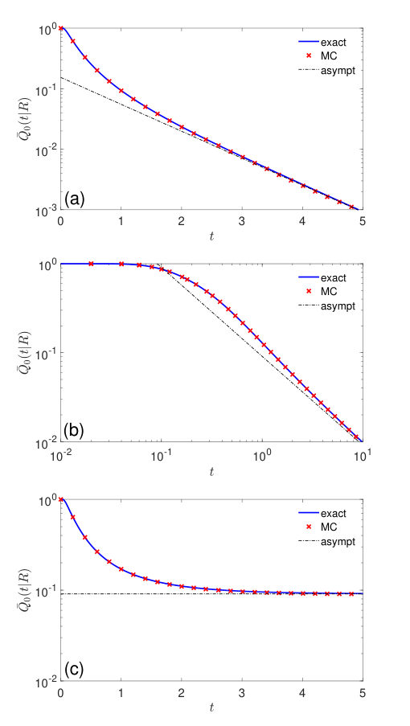
<figcaption class="paper-figure-caption"><b>Fig 4.</b> FIG. 4. The probability ¯Q0(t|R) = ¯G0(t|R) as a function of time t in the circular annulus with R = 0.1, L = 1, D = 1, qa = ∞. Three panels illustrate three regimes: (a) subcrit- ical (qc = 0.9 qcrit c ≈3.91); (b) critical (qc = qcrit c ≈4.34); and (c) supercritical (qc = 1.1 qcrit c ≈4.78), with qcrit c = 1/(R ln(L/R)). The starting point x0 is set on the catalytic region (inner circle). Solid line presents a numerical solu- tion of the integral equation (19) as described in Appendix G; crosses show an estimation from Monte Carlo simulations with 106 particles (see Appendix B); dashed line indicates the asymptotic relations (37, 39, 48) in subcritical, critical, and supercritical regimes,...</figcaption>
</figure>
<figure class="paper-figure-card">
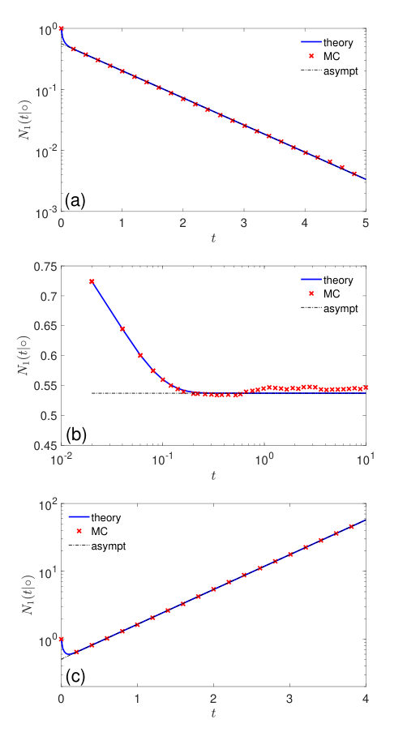
<figcaption class="paper-figure-caption"><b>Fig 5.</b> FIG. 5. Mean population size N1(t|◦) for the circular an- nulus with R = 0.1, L = 1, D = 1, qa = ∞, uniform start- ing point in the bulk. Three panels illustrate three regimes: (a) subcritical (qc = 0.9 qcrit c ≈3.91); (b) critical (qc = qcrit c ≈4.34); and (c) supercritical (qc = 1.1 qcrit c ≈4.78), with qcrit c = 1/(R ln(L/R)). Solid blue line presents the ex- act result obtained via the inverse Laplace transform of Eq. (F33); crosses show the empirical mean obtained over 106</figcaption>
</figure>
</div>

<p><strong>Summary.</strong> This work analyzes how a particle population evolves when diffusion is coupled with surface reactions involving both loss (absorption) and multiplication (catalysis). By deriving the generating function and applying advanced spectral analysis, the authors precisely map out three distinct long-term dynamic regimes—decaying, steady, or exploding—based on the relative strengths of the catalytic versus absorbing rates.</p>
<p><strong>Why it may be interesting.</strong> While focused on classical statistical mechanics, the rigorous treatment of nonlinear boundary conditions and the classification of dynamic regimes (sub/critical/supercritical) using spectral theory provides powerful mathematical techniques applicable to open quantum systems or reaction-diffusion models where boundaries impose non-trivial constraints.</p>
<details>
<summary>Detailed structure</summary>
<p><strong>Main problem.</strong> The study investigates the population dynamics of autocatalytic processes where particles diffuse in a complex environment, undergoing competing mechanisms of killing (absorption) and replication (branching) at specific surfaces.</p>
<p><strong>Main result.</strong> The long-time behavior of the population size is characterized by distinct regimes—decaying, steady-state, or exponential growth—determined by comparing catalytic and absorption rates against spectral properties of the underlying diffusion operator.</p>
<p><strong>Method.</strong> The analysis employs systematic theoretical tools including generating functions, transformation into nonlinear integral/partial differential equations, and advanced spectral methods (Laplace transforms) to solve for asymptotic limits.</p>
<p><strong>Model / system.</strong> The model describes particle diffusion in a bounded domain $\Omega$ with boundaries partitioned into an absorbing region ($\Gamma_a$), a catalytic region ($\Gamma_c$), and a reflecting region ($\Gamma_r$). The process is stochastic, involving both spatial transport and population change via branching.</p>
<p><strong>Key observables.</strong> Population size $N(t)$, generating function $G_s(t|x_0)$, mean $\langle N(t) 
angle$, variance, and the asymptotic limit of $G_s$.</p>
<p><strong>Important parameters / regimes.</strong> Diffusion coefficient ($D$), catalytic rate ($q_c$), absorption rate ($q_a$), and geometric parameters defining the boundary regions.</p>
<p><strong>Assumptions / limitations.</strong> The analysis assumes a bounded domain with smooth boundaries, allowing for spectral decomposition of the underlying diffusion operator; approximations are used for short-time behavior and asymptotic limits.</p>
<p><strong>Figures summary.</strong> Figures illustrate random realizations showing fluctuations across different catalytic rates ($q_c$), and plot the critical lines separating subcritical ($\lambda_{-0} > 0$), critical ($\lambda_{-0} = 0$), and supercritical ($\lambda_{-0} < 0$) regimes based on reaction rates.</p>
<p><strong>Paper structure.</strong> The paper progresses from defining the physical setup (diffusion with boundary reactions) to deriving the governing mathematical equations for the generating function. It then systematically analyzes the long-time asymptotic behavior by transforming these equations into spectral problems and solving them in different rate regimes.</p>
</details>
<details>
<summary>Abstract</summary>
<p>We investigate the population dynamics of surface-mediated autocatalytic processes, in which particles diffuse in a complex environment towards surface regions where they can be either killed or replicated. These opposite mechanisms compete with each other and lead to a sophisticated stochastic evolution of the population size. We provide a systematic analysis of the generating function of the population size. We also deduce its distribution, mean, variance and higher-order moments. For this purpose, we employ several equivalent descriptions of these quantities in terms of nonlinear integral equations and partial differential equations with nonlinear boundary conditions. We inspect the long-time behavior of the population dynamics in three regimes when the mean population size vanishes, reaches a steady-state level, or grows exponentially. A numerical solution of the underlying integral equations and independent Monte Carlo simulations support our theoretical predictions.</p>
</details>
<p><sub><a href="#top">↑ back to top</a></sub></p>

<p><a id="paper-2606.13205"></a></p>
<h3 id="achieving-heisenberg-limit-under-noisy-conditions-with-quantum-zeno-dynamics-and-dynamical-decoupling"><a href="http://arxiv.org/abs/2606.13205v1">Achieving Heisenberg limit under noisy conditions with quantum Zeno dynamics and dynamical decoupling</a></h3>
<p><strong>Authors:</strong> Ke Zeng, Bakmou Lahcen, Yu Jiang, Kok Chuan Tan<br>
<strong>Type:</strong> theory · <strong>Category:</strong> other · <strong>PDF:</strong> <a href="https://arxiv.org/pdf/2606.13205v1">https://arxiv.org/pdf/2606.13205v1</a><br>
<strong>Analysis basis:</strong> full PDF text, analyzed in chunks
<strong>Topic relevance:</strong> <code>methods for driven-dissipative</code> <strong>3/5</strong> · <code>correlated / nonlocal dissipation</code> <strong>2/5</strong> · <code>non-equilibrium dynamics</code> <strong>2/5</strong> · <code>Keldysh / 2PI / non-Gaussian methods</code> <strong>1/5</strong> · <code>analog quantum simulation</code> <strong>1/5</strong> · <code>driven-dissipative phase transition</code> <strong>1/5</strong> · <code>entanglement &amp; information structure</code> <strong>1/5</strong> · <code>non-equilibrium universality</code> <strong>1/5</strong> · <code>quantum measurements</code> <strong>1/5</strong></p>
<div class="figure-strip-hint">↔ Scroll figures horizontally</div>
<div class="paper-figures-scroll">
<figure class="paper-figure-card">
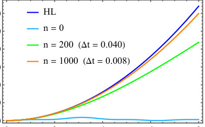
<figcaption class="paper-figure-caption"><b>Fig 1.</b> FIG. 1: QFI at different projection intervals ∆t and number of projections n. As the projection frequency increases, the QFI-time curve approaches the Heisenberg limit.</figcaption>
</figure>
<figure class="paper-figure-card">
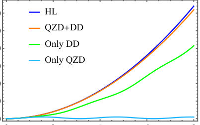
<figcaption class="paper-figure-caption"><b>Fig 2.</b> FIG. 2: QFI at number of projections n = 1000, with and without QZD and/or DD. QZD or DD alone were unable to saturate HL, but the combination succeeds.</figcaption>
</figure>
<figure class="paper-figure-card">
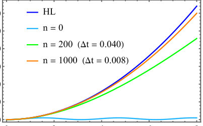
<figcaption class="paper-figure-caption"><b>Fig 3.</b> FIG. 3: QFI for the counterexample using QZD, at different projection intervals ∆t and number of projections n. As the projection frequency increases, the QFI-time curve approaches the Heisenberg limit.</figcaption>
</figure>
<figure class="paper-figure-card">
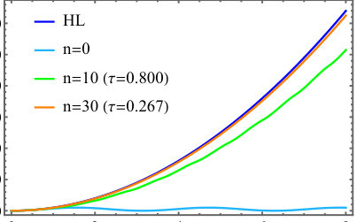
<figcaption class="paper-figure-caption"><b>Fig 4.</b> FIG. 4: QFI for the counterexample using DD, at different periods τ and number of cycles n. As the number of cycles increases, the QFI-time curve approaches the Heisenberg limit.</figcaption>
</figure>
</div>

<p><strong>Summary.</strong> This paper rigorously analyzes how Quantum Zeno Dynamics and Dynamical Decoupling can suppress environmental noise in quantum sensors to reach the ultimate Heisenberg Limit. It establishes conditions for these methods and crucially demonstrates that they offer a viable, sometimes superior, alternative to traditional Quantum Error Correction when dealing with specific types of open system dynamics.</p>
<p><strong>Why it may be interesting.</strong> This work is highly relevant to AMO physics and open quantum systems as it provides concrete, resource-aware protocols (QZD/DD) that can surpass theoretical limitations imposed by standard error correction techniques when dealing with realistic noise models.</p>
<details>
<summary>Detailed structure</summary>
<p><strong>Main problem.</strong> The core problem is determining the necessary and sufficient conditions under which Quantum Zeno Dynamics (QZD) and Dynamical Decoupling (DD) can effectively suppress environmental noise to achieve the Heisenberg Limit (HL) in quantum metrology.</p>
<p><strong>Main result.</strong> The authors prove that QZD/DD can achieve HL even when standard Quantum Error Correction (QEC) methods fail, demonstrating that combining both techniques allows saturation of the fundamental precision limit.</p>
<p><strong>Method.</strong> Theoretical analysis involving deriving effective Hamiltonians for QZD and DD under various noise models (Markovian), and comparing these conditions against those required by QEC theory.</p>
<p><strong>Model / system.</strong> The system involves a quantum probe ($S$) interacting with an environment ($E$), described by a total Hamiltonian $H_{tot}$. The analysis uses the Lindblad master equation for the Markovian regime, focusing on signal encoding and noise suppression mechanisms.</p>
<p><strong>Key observables.</strong> Quantum Fisher Information (QFI), which is used to diagnose whether the measurement precision approaches the Heisenberg Limit ($\propto 1/t^2$).</p>
<p><strong>Important parameters / regimes.</strong> The key parameters include the system Hamiltonian $H_S$, the environment coupling terms ($S_i$), and the control pulse timings ($\Delta t$ or $    au$) for QZD/DD.</p>
<p><strong>Assumptions / limitations.</strong> Assumptions include time-independent system-environment interaction, and approximations like Born-Markov and secular limits are used when comparing to QEC theory.</p>
<p><strong>Figures summary.</strong> Figures illustrate the Quantum Fisher Information (QFI) vs. time for various protocols, showing that while individual QZD or DD applications may fall short, their combination successfully saturates the Heisenberg Limit.</p>
<p><strong>Paper structure.</strong> The paper systematically establishes necessary and sufficient conditions for noise suppression via QZD and DD individually, then develops a comparison framework against QEC theory, culminating in proving the efficacy of hybrid protocols.</p>
</details>
<details>
<summary>Abstract</summary>
<p>Quantum Zeno dynamics (QZD) and dynamical decoupling (DD) are useful tools that enable the effective suppression of noise in quantum systems. We consider the problem of when (i) noise can be suppressed and (ii) Heisenberg limit (HL) can be achieved in quantum metrology, and prove necessary and sufficient conditions for when QZD and DD are useful for achieving these two goals. We also show that in the Markovian regime, there are scenarios where preventing errors using QZD/DD may enable HL to be achieved where current QEC methods may not. Finally, we demonstrate that the combination of both techniques can allow individually imperfect QZD and DD strategies to saturate HL.</p>
</details>
<p><sub><a href="#top">↑ back to top</a></sub></p>

<p><a id="paper-2606.13404"></a></p>
<h3 id="characterizing-the-functional-role-of-quantum-coherence-in-energy-transfer"><a href="http://arxiv.org/abs/2606.13404v1">Characterizing the functional role of quantum coherence in energy transfer</a></h3>
<p><strong>Authors:</strong> Hallmann Óskar Gestsson, Alexandra Olaya-Castro<br>
<strong>Type:</strong> theory · <strong>Category:</strong> other · <strong>PDF:</strong> <a href="https://arxiv.org/pdf/2606.13404v1">https://arxiv.org/pdf/2606.13404v1</a><br>
<strong>Analysis basis:</strong> full PDF text, analyzed in chunks
<strong>Topic relevance:</strong> <code>Keldysh / 2PI / non-Gaussian methods</code> <strong>3/5</strong> · <code>methods for driven-dissipative</code> <strong>3/5</strong> · <code>non-equilibrium dynamics</code> <strong>2/5</strong> · <code>analog quantum simulation</code> <strong>1/5</strong> · <code>correlated / nonlocal dissipation</code> <strong>1/5</strong> · <code>correlated cavity matter</code> <strong>1/5</strong> · <code>driven-dissipative phase transition</code> <strong>1/5</strong> · <code>non-equilibrium universality</code> <strong>1/5</strong></p>
<div class="figure-strip-hint">↔ Scroll figures horizontally</div>
<div class="paper-figures-scroll">
<figure class="paper-figure-card">
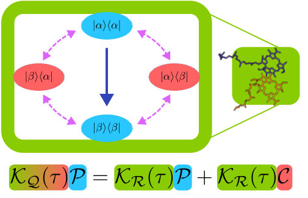
<figcaption class="paper-figure-caption"><b>Fig 1.</b> FIG. 1. Energy transfer in light-harvesting antennae is mod- eled as an open quantum system interacting with a local vi- brational environment. As an example, we show here two electronically coupled bacteriochlorophylls forming a dimer. The concurrent influence of the environment and quantum coherence to state transfer is described by the total memory kernel KQ(τ). We introduce the decomposition KQ(τ)P = KR(τ)P + KR(τ)C with KR(τ) being the environment mem- ory kernel, which allows us to directly quantify the extent to which the rate of energy transfer depends on quantum coher- ence via the term KR(τ)C.</figcaption>
</figure>
<figure class="paper-figure-card">
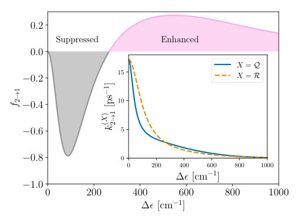
<figcaption class="paper-figure-caption"><b>Fig 2.</b> FIG. 2. The figure of merit f2→1 as a function of detuning in a dimer coupled to an overdamped Brownian oscillator. The gray and pink regions correspond to regimes where the func- tional role of quantum coherence is to suppress and enhance the energy transfer process, respectively. The inset shows the corresponding total (solid line) and thermal (dashed line) rates of the downhill energy transfer process. The two rates deviate for intermediate detuning, demonstrating the impact of quantum coherence on the transfer process.</figcaption>
</figure>
<figure class="paper-figure-card">
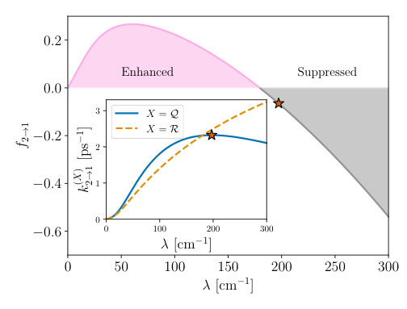
<figcaption class="paper-figure-caption"><b>Fig 3.</b> FIG. 3. The figure of merit f2→1 as a function of the re- organization energy of the overdamped Brownian oscillator, with ∆ϵ = 400 cm−1. The gray and pink regions correspond to regimes where the functional role of quantum coherence is to suppress and enhance the energy transfer process, respec- tively. The inset shows the corresponding total (solid line) and thermal (dashed line) rates of the downhill transfer pro- cess. The star marker indicates the point where the optimal value of k(Q) 2→1 is achieved, which in this example occurs when f2→1 &lt; 0.</figcaption>
</figure>
<figure class="paper-figure-card">
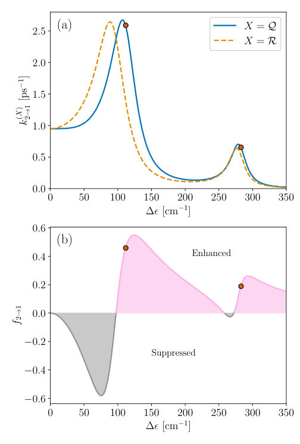
<figcaption class="paper-figure-caption"><b>Fig 4.</b> FIG. 4. (a) The total (solid line) and thermal (dashed line) transfer rates as a function of detuning in the dimer coupled to an underdamped Brownian oscillator. The mode is centered at Ω= 150 cm−1, such that exciton-vibration resonances oc- cur at detuning values √</figcaption>
</figure>
</div>

<p><strong>Summary.</strong> This paper develops a general theoretical framework using projection operators and memory kernels to quantify how quantum coherence influences energy transfer rates. By applying this to an electronic dimer model coupled to a structured bath, the authors demonstrate that coherence can act as a switch, either boosting or dampening the rate depending on system parameters.</p>
<p><strong>Why it may be interesting.</strong> This work provides a rigorous, quantitative tool ($f$) to diagnose coherence effects in energy transfer, which is crucial for designing artificial light-harvesting systems or understanding biological processes where coherent dynamics are suspected.</p>
<details>
<summary>Detailed structure</summary>
<p><strong>Main problem.</strong> The primary goal is to quantitatively characterize the functional role of quantum coherence in modulating energy transfer rates within open quantum systems.</p>
<p><strong>Main result.</strong> Quantum coherence can either enhance or suppress the overall rate of energy transfer, depending on system parameters like detuning and coupling strength. A figure of merit quantifies this relative contribution.</p>
<p><strong>Method.</strong> The authors employ Nakajima-Zwanzig projection operators to derive a generalized memory kernel identity, allowing for the separation of coherent and incoherent contributions to the dynamics.</p>
<p><strong>Model / system.</strong> The study uses an electronic dimer model (two coupled sites) interacting with structured phonon baths. The dynamics are governed by the Liouville-von Neumann equation, analyzed using techniques derived from HEOM.</p>
<p><strong>Key observables.</strong> The figure of merit $f_{\alpha	oeta} = 1 - k^{(R)}_{\alpha	oeta}/k^{(Q)}_{\alpha	oeta}$ quantifies coherence's relative impact on the energy transfer rate.</p>
<p><strong>Important parameters / regimes.</strong> Electronic detuning ($\Delta\epsilon$), coupling strength ($V$), reorganization energy ($\lambda$), and spectral density parameters ($\gamma, \Omega$).</p>
<p><strong>Assumptions / limitations.</strong> The analysis often assumes a stationary state limit ($t 	o \infty$) and utilizes the HEOM framework, which requires truncating an infinite hierarchy.</p>
<p><strong>Figures summary.</strong> Figures illustrate $f_{2	o 1}$ as a function of detuning ($\Delta\epsilon$) or reorganization energy ($\lambda$), showing distinct regimes of coherence-induced suppression (gray) or enhancement (pink).</p>
<p><strong>Paper structure.</strong> The paper develops the theoretical framework using projection operators to derive memory kernel identities, applies this formalism to the dimer model dynamics via HEOM, and analyzes how specific parameters tune the resulting rate modification quantified by $f$.</p>
</details>
<details>
<summary>Abstract</summary>
<p>Quantum coherence is understood to play a role in excitation energy transfer in open quantum systems, yet a quantitative approach to assessing its influence on the transfer process is still missing. Using Nakajima-Zwanzig projection operators, we derive a general memory kernel identity that enables us to characterize and quantify the impact of coherence in the eigenenergy basis on a generalized rate of energy transfer. Applying our approach to the electronic dynamics of a dimer coupled to a structured phonon bath, we demonstrate how quantum coherence acts to modulate energy transfer.</p>
</details>
<p><sub><a href="#top">↑ back to top</a></sub></p>

<p><a id="paper-2606.12769"></a></p>
<h3 id="matrix-phase-space-representations-for-quantum-symmetries"><a href="http://arxiv.org/abs/2606.12769v1">Matrix phase-space representations for quantum symmetries</a></h3>
<p><strong>Authors:</strong> Peter D. Drummond, Alexander S. Dellios, Margaret D. Reid<br>
<strong>Type:</strong> theory · <strong>Category:</strong> other · <strong>PDF:</strong> <a href="https://arxiv.org/pdf/2606.12769v1">https://arxiv.org/pdf/2606.12769v1</a><br>
<strong>Analysis basis:</strong> full PDF text, analyzed in chunks
<strong>Topic relevance:</strong> <code>analog quantum simulation</code> <strong>3/5</strong> · <code>methods for driven-dissipative</code> <strong>3/5</strong> · <code>non-equilibrium dynamics</code> <strong>2/5</strong> · <code>Keldysh / 2PI / non-Gaussian methods</code> <strong>1/5</strong> · <code>correlated / nonlocal dissipation</code> <strong>1/5</strong> · <code>correlated cavity matter</code> <strong>1/5</strong> · <code>driven-dissipative phase transition</code> <strong>1/5</strong> · <code>entanglement &amp; information structure</code> <strong>1/5</strong></p>
<div class="figure-strip-hint">↔ Scroll figures horizontally</div>
<div class="paper-figures-scroll">
<figure class="paper-figure-card">
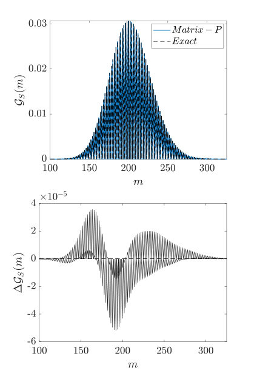
<figcaption class="paper-figure-caption"><b>Fig 1.</b> Figure 1. Upper plot: Matrix-P simulations of the total photo-count probability (solid blue lines) versus the exact multi-mode squeezed state photon counting distribution for GBS (dashed black lines) for squeezed states with uniform squeezing parameter r = [0.75, . . . , 0.75] and a Haar random unitary matrix of size M = 300. Numerical probabilities are obtained by averaging over ensembles of size ES = 1.2 × 106. Lower plot: Difference errors of the exact and matrix-P simulated distributions, which are so small that they are not visible.</figcaption>
</figure>
<figure class="paper-figure-card">
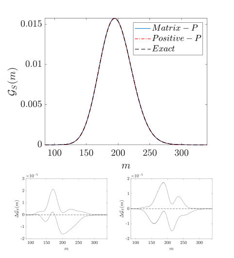
<figcaption class="paper-figure-caption"><b>Fig 2.</b> Figure 3. Upper plot: Comparison of the matrix-P (solid blue line), positive-P (dash dot red line) and exact lossy (dashed black line) total photo-count distribution for the network in Fig.(1) with ≈3% uniform photon loss. Both the positive-P and matrix-P distributions converge to the exact case in this regime. Bottom plots: Typical difference errors (showing lines for ±1σ) of the matrix-P (left plot) and positive-P (right plot) simulated and exact distributions.</figcaption>
</figure>
<figure class="paper-figure-card">
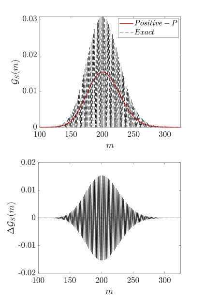
<figcaption class="paper-figure-caption"><b>Fig 3.</b> Figure 2. Description follows Fig.(1) except now the positive-P phase-space distribution is used for simulations of the total photo-count probability (solid red lines). Differ- ences are ≈103 times larger than matrix-P and are clearly visible. These are caused by a skewed distribution requiring enormous sample numbers to reach full convergence.</figcaption>
</figure>
</div>

<p><strong>Summary.</strong> The paper introduces the novel 'matrix phase-space' formalism to simulate complex many-body quantum dynamics by incorporating global quantum symmetries directly into the state representation. This method projects the system onto a reduced Hilbert space, leading to significantly lower sampling errors in simulations of systems like Gaussian Boson Sampling. It provides essential mathematical identities for mapping quantum evolution equations into solvable forms.</p>
<p><strong>Why it may be interesting.</strong> This work is highly relevant as it provides a powerful theoretical tool—the matrix-P representation—to tackle the exponential complexity of simulating quantum systems with symmetries, which is crucial for understanding near-term photonic quantum computing devices like GBS.</p>
<details>
<summary>Detailed structure</summary>
<p><strong>Main problem.</strong> The core problem is developing a mathematically rigorous, general phase-space representation that can accurately simulate large-scale many-body quantum dynamics while explicitly incorporating global quantum symmetries.</p>
<p><strong>Main result.</strong> The matrix phase-space method provides an expansion that projects the density matrix onto a reduced Hilbert space defined by symmetry projectors, significantly reducing sampling errors compared to standard methods like Wigner or Q-functions.</p>
<p><strong>Method.</strong> The authors introduce the 'matrix phase-space' representation, which generalizes existing phase-space techniques by encoding symmetries ($\hat{\Pi}_{
u}$) directly into the basis expansion and kernel operator. This allows for deriving necessary operator identities mapping Liouville/master equations to generalized Fokker-Planck Equations.</p>
<p><strong>Model / system.</strong> The theory is applied to general bosonic quantum systems, with specific detailed applications shown for Gaussian Boson Sampling (GBS) quantum computers and analyzing the dynamics of squeezed vacuum states in lossy environments. The formalism handles both discrete symmetries (like parity) and continuous symmetry limits.</p>
<p><strong>Key observables.</strong> Total photo-count distribution; sampling errors/difference errors between simulated and exact distributions; expectation values of photon number ($\langle \hat{n}_j 
angle$).</p>
<p><strong>Important parameters / regimes.</strong> Squeezing parameter ($r$); loss rate (e.g., $\approx 3\%$); symmetry projection indices ($    ilde{p}$); the limit $M 	o \infty$ for continuum approximations.</p>
<p><strong>Assumptions / limitations.</strong> The method assumes that symmetries can be effectively captured by commuting projectors, and derivations often rely on specific factorizations of the kernel operator and vanishing boundary terms when transforming dynamics into FPEs.</p>
<p><strong>Figures summary.</strong> Figures compare the matrix-P distribution against exact results for GBS (lossless and lossy), demonstrating superior accuracy in reducing sampling errors compared to standard positive-P methods, especially in low-photon-number regimes.</p>
<p><strong>Paper structure.</strong> The paper builds from general theory by defining the matrix phase-space expansion using symmetry projectors. It then derives fundamental operator identities for this representation (e.g., action of $\hat{a}_k$ on projected states). Finally, it validates the method through detailed applications to GBS simulations in both ideal and lossy settings.</p>
</details>
<details>
<summary>Abstract</summary>
<p>We introduce a general phase-space representation that includes global quantum symmetries in the basis expansion. This method, called matrix phase-space, projects the basis onto a reduced Hilbert space, which can greatly reduce sampling errors of many-body quantum simulations and unifies several previous phase-space methods. The purpose of this paper is to provide detailed proofs of basic theorems and operator identities. We also treat several different types of symmetries. To illustrate the benefits of matrix phase-space methods, we give a detailed derivation of a recent application to the topical problem of verifying the outputs of Gaussian boson sampling (GBS) quantum computers with photon number resolving detectors. This has exponential complexity, and using parity symmetry reduces sampling errors by very large factors relative to earlier methods.</p>
</details>
<p><sub><a href="#top">↑ back to top</a></sub></p>

<p><a id="paper-2606.13284"></a></p>
<h3 id="where-a-quantum-reservoir-works-a-transferable-operating-band"><a href="http://arxiv.org/abs/2606.13284v1">Where a Quantum Reservoir Works: A Transferable Operating Band</a></h3>
<p><strong>Authors:</strong> Markus Baumann, Itamar Fink, Johannes Wittmann, Claudia Linnhoff-Popien, Jonas Stein<br>
<strong>Type:</strong> theory · <strong>Category:</strong> disordered systems and neural networks · <strong>PDF:</strong> <a href="https://arxiv.org/pdf/2606.13284v1">https://arxiv.org/pdf/2606.13284v1</a><br>
<strong>Analysis basis:</strong> full PDF text, analyzed in chunks
<strong>Topic relevance:</strong> <code>driven-dissipative phase transition</code> <strong>3/5</strong> · <code>methods for driven-dissipative</code> <strong>3/5</strong> · <code>non-equilibrium universality</code> <strong>2/5</strong> · <code>analog quantum simulation</code> <strong>1/5</strong> · <code>correlated / nonlocal dissipation</code> <strong>1/5</strong> · <code>correlated cavity matter</code> <strong>1/5</strong> · <code>entanglement &amp; information structure</code> <strong>1/5</strong> · <code>non-equilibrium dynamics</code> <strong>1/5</strong></p>
<div class="figure-strip-hint">↔ Scroll figures horizontally</div>
<div class="paper-figures-scroll">
<figure class="paper-figure-card">
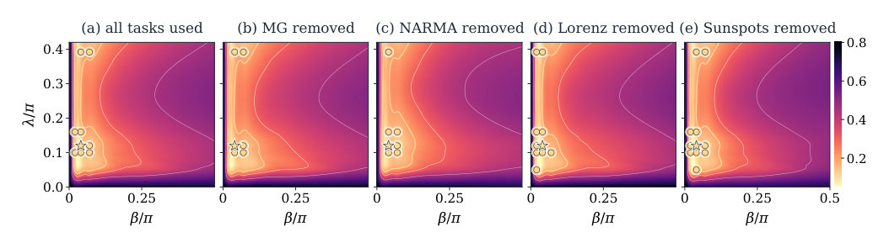
<figcaption class="paper-figure-caption"><b>Fig 1.</b> Fig. 1. The good operating region is essentially the same whichever task we score. Each panel maps validation rank over input drive β and coupling λ at fixed damping γ = 0.12. Brighter means better rank. Panel (a) uses all four tasks; panels (b) to (e) each drop one. Gold circles mark the top validation quintile across tasks and seeds; the star is the band’s medoid. The basin and circles barely move when a task is dropped, so the band is not an artifact of any single task.</figcaption>
</figure>
<figure class="paper-figure-card">
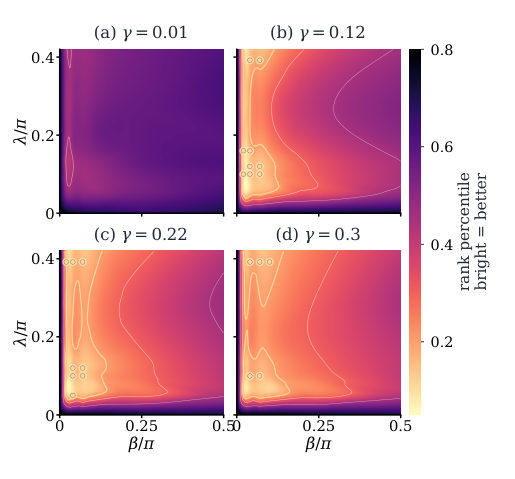
<figcaption class="paper-figure-caption"><b>Fig 2.</b> Fig. 2. Controlled forgetting is necessary for the regime. Each panel maps validation rank over (β, λ) at the damping rate γ named in its title (brighter = better); gold circles are the B20,0.7 band points at that γ. The band is essentially empty at γ = 0.01 and fills in from γ = 0.12 to 0.30.</figcaption>
</figure>
<figure class="paper-figure-card">
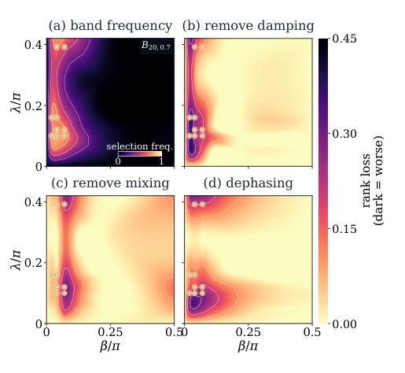
<figcaption class="paper-figure-caption"><b>Fig 3.</b> Fig. 3. Mechanism ablations destroy the operating band. (a) Selection frequency in the original reservoir: for each coordinate (β, λ), the color shows how often it reaches top-quintile validation rank across the 80 task–seed replicates; gold circles mark the B20,0.7 band. (b)–(d) Validation-rank loss for three representative ablations named in the panels, with darker colors indicating larger deterioration. The strongest losses occur at the original band coordinates.</figcaption>
</figure>
<figure class="paper-figure-card">
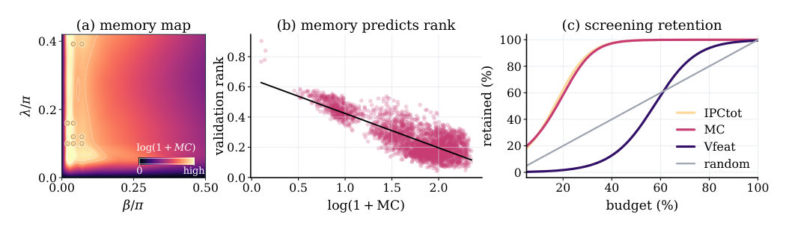
<figcaption class="paper-figure-caption"><b>Fig 4.</b> Fig. 4. Memory alone locates the band before any task is run. (a) Task-free memory-capacity map, log(1 + MC), on the γ = 0.12 slice of Fig. 1; gold points lie in the memory-rich region. (b) Higher memory predicts lower validation rank (Spearman ρs = −0.88). (c) Screening by each diagnostic’s top-ranked fraction: MC and information-processing capacity (IPC) recover good settings far faster than random selection, whereas raw feature diversity (Vfeat) barely beats chance.</figcaption>
</figure>
</div>

<p><strong>Summary.</strong> The paper identifies a specific, transferable 'operating band' in the parameter space of a dissipative quantum reservoir that guarantees good performance across multiple learning tasks. By systematically testing and ablating individual physical mechanisms (like damping or mixing), the authors prove that this regime requires the joint action of all components. This provides a crucial diagnostic tool for designing stable quantum machine learning hardware.</p>
<p><strong>Why it may be interesting.</strong> This work provides concrete guidelines for designing quantum machine learning hardware by identifying robust operating regimes in the control space, which is crucial for realizing practical, stable quantum computation devices.</p>
<details>
<summary>Detailed structure</summary>
<p><strong>Main problem.</strong> The core problem is determining the optimal, fixed operating regime for a quantum reservoir system so that it can perform well on various learning tasks without requiring dynamic optimization during training.</p>
<p><strong>Main result.</strong> Good performance concentrates in a single, transferable 'operating band' within the control parameter space ($eta, \lambda, \gamma$), whose existence depends mechanistically on the joint action of all physical components (e.g., damping and mixing).</p>
<p><strong>Method.</strong> The authors map performance across three key physical controls by defining an operating band using a stability criterion based on validation percentile rank across multiple tasks.</p>
<p><strong>Model / system.</strong> The system is a dissipative quantum reservoir implemented on a small qubit architecture, evolving via input driving, local mixing ($U_{	ext{mix}}$), ZZ coupling ($U_\lambda$), and amplitude damping ($D_\gamma$).</p>
<p><strong>Key observables.</strong> Validation percentile rank ($  ext{r}_{j,s}$), Memory Capacity ($ ext{MC}$), Information-Processing Capacity ($  ext{IPC}$).</p>
<p><strong>Important parameters / regimes.</strong> Input drive strength ($eta$), Coupling strength ($\lambda$), Dissipation rate ($\gamma$).</p>
<p><strong>Assumptions / limitations.</strong> The analysis is restricted to simulated instances of this specific reservoir architecture family, and practical noise/calibration issues are ignored.</p>
<p><strong>Figures summary.</strong> Figures show the consistent location of the operating band across different tasks (Fig. 1), demonstrate that ablating any core mechanism destroys the band (Fig. 3), and illustrate that memory capacity alone can locate this optimal regime before task testing (Fig. 4).</p>
<p><strong>Paper structure.</strong> The paper establishes the problem by noting fixed dynamics, then maps performance over three controls to find a stable 'Operating Band.' It rigorously tests this band's necessity and transferability by ablating individual physical mechanisms or comparing it against simpler diagnostics like memory capacity.</p>
</details>
<details>
<summary>Abstract</summary>
<p>In quantum reservoir computing, a fixed quantum system transforms an input signal, while learning reduces to training a simple linear readout on its measured outputs. Since the quantum dynamics themselves are never optimized, the method is well suited to today's hardware. Yet these dynamics must still be chosen carefully, because their settings remain fixed throughout training and inference. It therefore remains an open question where, in its control space, a fixed quantum system learns well. We address this question for a dissipative reservoir by mapping performance over three central physical controls: the strength of the input drive, the coupling between neighboring qubits, and the rate of dissipation. Good performance concentrates in a single, well-defined operating region of this control space. This region transfers across tasks and reservoir initializations, and the same memory-defined regime persists under architectural changes. It is also mechanistically grounded, since it disappears whenever any of the mechanisms that create it is removed. Finally, the region can be located cheaply before any task is run, using a simple memory diagnostic.</p>
</details>
<p><sub><a href="#top">↑ back to top</a></sub></p>

<p><a id="paper-2606.13650"></a></p>
<h3 id="to-cool-or-not-to-cool-displacement-sensing-with-hot-quantum-states"><a href="http://arxiv.org/abs/2606.13650v1">To Cool, or Not to Cool? Displacement Sensing with Hot Quantum States</a></h3>
<p><strong>Authors:</strong> Piotr T. Grochowski<br>
<strong>Type:</strong> theory · <strong>Category:</strong> other · <strong>PDF:</strong> <a href="https://arxiv.org/pdf/2606.13650v1">https://arxiv.org/pdf/2606.13650v1</a><br>
<strong>Analysis basis:</strong> full PDF text, analyzed in chunks
<strong>Topic relevance:</strong> <code>methods for driven-dissipative</code> <strong>3/5</strong> · <code>analog quantum simulation</code> <strong>2/5</strong> · <code>non-equilibrium dynamics</code> <strong>2/5</strong> · <code>Keldysh / 2PI / non-Gaussian methods</code> <strong>1/5</strong> · <code>correlated / nonlocal dissipation</code> <strong>1/5</strong> · <code>driven-dissipative phase transition</code> <strong>1/5</strong> · <code>entanglement &amp; information structure</code> <strong>1/5</strong> · <code>interference shaping light</code> <strong>1/5</strong></p>
<div class="figure-strip-hint">↔ Scroll figures horizontally</div>
<div class="paper-figures-scroll">
<figure class="paper-figure-card">
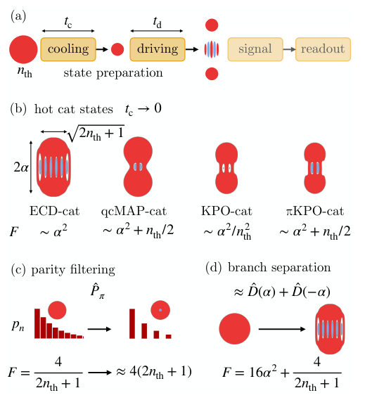
<figcaption class="paper-figure-caption"><b>Fig 1.</b> Figure 1. Operational structure of hot-state bosonic sensing and rep- resentative resources. (a) Cycle: cooling, nonclassical-state prepa- ration, signal accumulation, and readout. (b) Hot states are gener- ated by applying a nonclassical-state preparation protocol directly to a thermal rather than ground state. Echoed conditional displace- ment (ECD), qubit-cavity mapping (qcMAP), and Kerr-parametric- oscillator (KPO) protocols generate distinct hot-cat classes with dif- ferent thermal-sensitivity scaling. Here πKPO denotes KPO catifi- cation preceded by parity filtering. These scalings depend on two mechanisms. (c) Projection onto a definite parity sector leaves the thermal population in...</figcaption>
</figure>
<figure class="paper-figure-card">
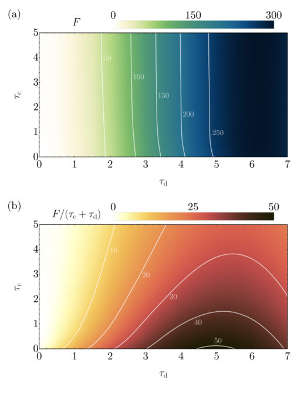
<figcaption class="paper-figure-caption"><b>Fig 2.</b> Figure 2. Optimization of cooling and driving times for trapped-ion hot-state sensing using full numerical master-equation simulations. (a) Full QFI as a function of cooling time τc and driving time τd. (b) Effective metrological gain per unit preparation time, F/(τc + τd), showing the emergence of an optimal finite driving time despite the monotonic increase of F. The calculations assume initial thermal occupation nth = 10, cooling rate γc = 1, motional-heating rate γh = 10−3, and ancilla-spin-dephasing rate γs = 10−2, correspond- ing to experimentally realistic trapped-ion parameters. The optimal driving time is set by the competition between coherent QFI growth and noise-induced...</figcaption>
</figure>
</div>

<p><strong>Summary.</strong> The paper challenges the assumption that quantum-enhanced bosonic sensing requires cooling to the ground state. By analyzing hot quantum states generated via squeezing or catification, it identifies two mechanisms—parity filtering and coherent branch interference—that maintain high sensitivity even with thermal noise. Ultimately, it shows that optimizing for the rate of information gain over time favors direct preparation of structured hot states over extensive pre-cooling.</p>
<p><strong>Why it may be interesting.</strong> This work provides a crucial resource for quantum sensing by shifting the focus from achieving perfect initial state purity to engineering specific coherence structures within mixed thermal states, which is highly relevant for practical implementations in trapped ions or cavity QED.</p>
<details>
<summary>Detailed structure</summary>
<p><strong>Main problem.</strong> The study investigates whether quantum-enhanced displacement sensing using bosonic systems requires mandatory cooling to near the ground state, or if high sensitivity can be achieved directly from thermal (hot) states.</p>
<p><strong>Main result.</strong> Hot-state engineering protocols—specifically those utilizing parity selection or coherent branch interference—can achieve quantum enhancement without requiring full ground-state initialization. Optimal sensing depends on maximizing coherence per unit total experimental time, not just single-shot QFI.</p>
<p><strong>Method.</strong> The analysis involves deriving the Quantum Fisher Information (QFI) for various hot states and comparing the scaling of this resource under different decoherence channels (loss, heating, dephasing).</p>
<p><strong>Model / system.</strong> Bosonic systems are modeled using master equations incorporating bosonic loss, motional heating, and number dephasing. Specific protocols analyzed include parity-filtered cat states (KPO/qcMAP) and Echoed Conditional Displacement (ECD) cat states.</p>
<p><strong>Key observables.</strong> Quantum Fisher Information (QFI), $\Delta	ilde{\epsilon}$, noise susceptibility ($\dot{F}$), and the rate objective $R = F / t_{cycle}$.</p>
<p><strong>Important parameters / regimes.</strong> Initial thermal occupation ($n_{th}$), squeezing parameter ($r$), decoherence rates ($\Gamma_h, \gamma_-, \Gamma_\phi$), and protocol preparation time ($  au_d$).</p>
<p><strong>Assumptions / limitations.</strong> The analysis often relies on effective two-branch models or approximations for the rate objective $R$, assuming certain overhead times are negligible or fixed.</p>
<p><strong>Figures summary.</strong> Figures illustrate operational cycles, scaling laws for different mechanisms (parity filtering vs. branch separation), and normalized QFI dynamics under various noise channels (loss, diffusion, dephasing).</p>
<p><strong>Paper structure.</strong> The paper progresses from identifying the core problem to analyzing two key enhancement mechanisms (Parity Filtering and Coherent Interference). It then rigorously compares these hot-state protocols across different decoherence models, culminating in an optimization comparison between cooling overhead versus direct preparation.</p>
</details>
<details>
<summary>Abstract</summary>
<p>Quantum-enhanced displacement sensing with bosonic systems is typically formulated assuming that the oscillator is cooled close to its ground state before nonclassical probe preparation. We investigate whether such near-ground-state initialization is necessary, or whether sensitive probes can instead be generated directly from thermal states. We analyze hot quantum probes produced by squeezing, number-raising, and Schrödinger-cat-state generation applied to thermal inputs. We identify two distinct mechanisms by which thermal mixedness can remain compatible with enhanced displacement sensitivity. First, projecting a mixed probe onto a definite parity sector removes the usual thermal suppression of the displacement quantum Fisher information, which can then increase with initial thermal occupation. Second, coherent superpositions of opposite displacements can retain sensitivity through coherence between their displaced components, even when the underlying state is mixed. We use these two mechanisms to classify hot-state protocols according to whether their sensitivity comes from parity selection, coherence between displaced components, or both. Finally, we formulate an experimentally relevant optimization problem comparing initial cooling with direct hot-state preparation under realistic decoherence and show that complete cooling is not universally optimal. Our results establish hot-state engineering as a route to quantum-enhanced bosonic displacement sensing without mandatory ground-state initialization.</p>
</details>
<p><sub><a href="#top">↑ back to top</a></sub></p>

<p><a id="paper-2606.12539"></a></p>
<h3 id="unifying-spacetime-approaches-to-quantum-mechanics"><a href="http://arxiv.org/abs/2606.12539v1">Unifying spacetime approaches to quantum mechanics</a></h3>
<p><strong>Authors:</strong> N. L. Diaz, M. Cerezo, Paolo Braccia<br>
<strong>Type:</strong> theory · <strong>Category:</strong> other · <strong>PDF:</strong> <a href="https://arxiv.org/pdf/2606.12539v1">https://arxiv.org/pdf/2606.12539v1</a><br>
<strong>Analysis basis:</strong> full PDF text, analyzed in chunks
<strong>Topic relevance:</strong> <code>Keldysh / 2PI / non-Gaussian methods</code> <strong>3/5</strong> · <code>entanglement &amp; information structure</code> <strong>3/5</strong> · <code>non-equilibrium dynamics</code> <strong>2/5</strong> · <code>correlated / nonlocal dissipation</code> <strong>1/5</strong> · <code>driven-dissipative phase transition</code> <strong>1/5</strong> · <code>methods for driven-dissipative</code> <strong>1/5</strong> · <code>non-equilibrium universality</code> <strong>1/5</strong></p>
<div class="figure-strip-hint">↔ Scroll figures horizontally</div>
<div class="paper-figures-scroll">
<figure class="paper-figure-card">
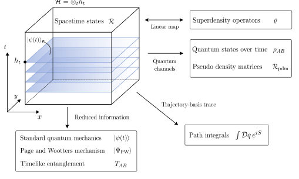
<figcaption class="paper-figure-caption"><b>Fig 1.</b> FIG. 1. Schematic depiction of how standard QM and its main extensions to a spacetime setting arise from a common object.</figcaption>
</figure>
<figure class="paper-figure-card">
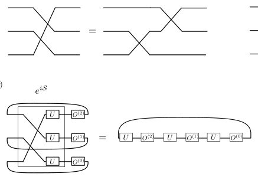
<figcaption class="paper-figure-caption"><b>Fig 2.</b> FIG. 2. Tensor network representation of the main objects of the formalism for N = 3. Panel a) Time translations across slices and the corresponding SWAP decomposition. Panel b) Time translations within slices. Panel c) the quantum action operator and a particular case of Theorem 1.</figcaption>
</figure>
<figure class="paper-figure-card">
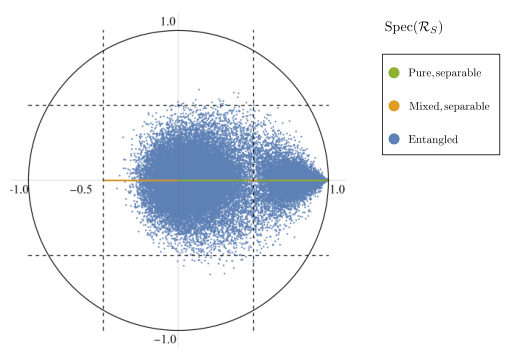
<figcaption class="paper-figure-caption"><b>Fig 3.</b> FIG. 3. Spectrum in the complex plane of RS = TrE[R] for S, E qubits and N = 2. We sampled Haar randomly both global unitaries and (i) Separable system-environment and pure state (green points) (ii) Separable system-environment and mixed state (orange points) (iii) General (entangled) system-environment state (blue points). For each scenario a total of 104 points have been sampled. In case (i) the spec- trum is restricted to the real interval (0, 1) while in case (ii) to (−1/2, 1). In the general case (iii) the spectrum is complex.</figcaption>
</figure>
<figure class="paper-figure-card">
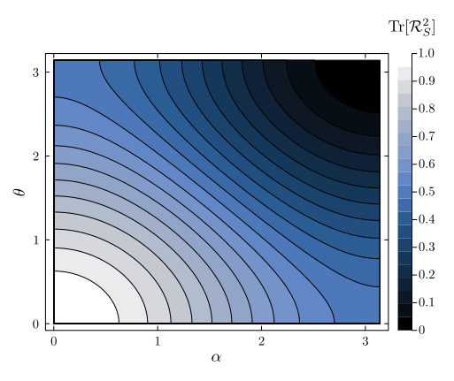
<figcaption class="paper-figure-caption"><b>Fig 4.</b> FIG. 4. Contour plot of the pseudo-purity Tr[R2 S] with initial state given by |ψ(θ)⟩= cos(θ/4)|00⟩+sin(θ/4)|11⟩and global unitary U = (1S ⊗|0⟩E⟨0| + XS ⊗|1⟩E⟨1|)e−iαYE/4. Here, θ parameterizes the initial state entanglement while α parame- terizes the entanglement generated by the evolution (and the final state entanglement). In particular, the line θ = 0 cor- responds to the standard purity of the state of the system after the evolution. In this scenario the pseudo-purity is a real quantity for all values of the parameters since the com- plex eigenvalues of RS come in conjugate pairs.</figcaption>
</figure>
<figure class="paper-figure-card">

<figcaption class="paper-figure-caption"><b>Fig 5.</b> FIG. 5. Contour plot of the imagitivity of the spacetime state RA corresponding to the ground state of a critical antiferromagnetic Heisenberg model under bipartition A = (0, 0) ∪(t, x) B = rest. Here we are considering the same number of temporal and spatial slices N = L + 1 = 101 with ϵ = 0.05. The red dash-doted lines correspond to the speed of low-energy modes associated with an effective infrared CFT description.</figcaption>
</figure>
</div>

<p><strong>Summary.</strong> The paper proposes 'spacetime quantum mechanics' (SQM) to resolve the conflict between space and time in QM by defining generalized 'spacetime states.' It demonstrates that various existing formalisms—like path integrals and pseudo-density matrices—are mathematically equivalent manifestations of this single underlying state object. This unification provides deep insights into how temporal correlations govern quantum dynamics.</p>
<p><strong>Why it may be interesting.</strong> This work provides a powerful, unified mathematical framework for understanding time evolution in quantum theory, which is crucial for developing consistent theories of quantum gravity or relativistic QFTs.</p>
<details>
<summary>Detailed structure</summary>
<p><strong>Main problem.</strong> The central problem is formulating quantum mechanics (QM) in a way that treats space and time symmetrically, addressing the conceptual tension between relativity and canonical QM.</p>
<p><strong>Main result.</strong> The authors unify numerous existing spacetime approaches by showing they all derive from a single underlying mathematical object: the 'spacetime state' ($R$).</p>
<p><strong>Method.</strong> They develop a formalism using a finite-time tensor product Hilbert space ($\mathcal{H} = igotimes_{t=0}^{N-1} \mathcal{H}_t$) and define spacetime states as generalized quantum operators that encode temporal correlations.</p>
<p><strong>Model / system.</strong> The model is 'spacetime quantum mechanics' (SQM), describing systems over a finite spacetime region. The formalism uses time translation operators ($\mathbf{e}^{i\epsilon P}$) and constructs the state $R$ from initial states $
ho_0$.</p>
<p><strong>Key observables.</strong> Spacetime states ($R$), pseudo-entropies ($S_\alpha(R)$), Wightman functions, and Out-of-Time-Order Correlators (OTOCs).</p>
<p><strong>Important parameters / regimes.</strong> Finite time window $T = \epsilon N$, the time step $\epsilon$, and system/environment bipartitions.</p>
<p><strong>Assumptions / limitations.</strong> The initial formulation assumes a finite time window and discrete time slices, although extensions to continuum limits are discussed. The derivation of certain properties relies on specific mathematical decompositions (e.g., for pure states).</p>
<p><strong>Figures summary.</strong> Figures illustrate the relationship between standard QM and spacetime approaches; one shows spectral analysis of $R$ across bipartitions, while another plots OTOC eigenvalues versus time.</p>
<p><strong>Paper structure.</strong> The paper builds by first defining the necessary mathematical machinery (Spacetime Hilbert space, action operators $\mathbf{S}$), then deriving how standard quantum evolution pictures (Schrödinger/Heisenberg) are recovered via partial tracing, and finally analyzing advanced properties like isospectrality and entanglement measures.</p>
</details>
<details>
<summary>Abstract</summary>
<p>Recent efforts to formulate quantum mechanics in a way that treats space and time on a more equal footing have led to a large variety of spacetime-oriented approaches. In this work we present a detailed study of spacetime states, the objects that play the role of quantum states in the recently introduced framework of spacetime quantum mechanics, and show that the main proposals in the literature are different manifestations of the same underlying object. Path integrals, quantum states over time, pseudo-density matrices, the Page and Wootters mechanism, superdensity operators, and timelike-entanglement proposals all arise from spacetime states through particular evaluations, reduced information, linear maps, or quantum channels. This unification provides explicit mathematical representations of these formalisms, reveals relations among them, and clarifies the spacetime information each one captures. We also study the broader relevance of the spacetime-state point of view for Leggett-Garg inequalities, OTOCs, temporal tensor networks, fermionic systems, relativistic QFTs, quantum reference frames, and classical physics, together with additional insights and perspectives revealed by the common unifying framework.</p>
</details>
<p><sub><a href="#top">↑ back to top</a></sub></p>

<p><a id="paper-2606.12696"></a></p>
<h3 id="optical-pulse-induced-quantum-geometric-waves-in-graphene"><a href="http://arxiv.org/abs/2606.12696v1">Optical pulse-induced quantum geometric waves in graphene</a></h3>
<p><strong>Authors:</strong> Luis Fernando Cardenas Castillo, Wei Chen<br>
<strong>Type:</strong> theory · <strong>Category:</strong> other · <strong>PDF:</strong> <a href="https://arxiv.org/pdf/2606.12696v1">https://arxiv.org/pdf/2606.12696v1</a><br>
<strong>Analysis basis:</strong> full PDF text, analyzed in chunks
<strong>Topic relevance:</strong> <code>non-equilibrium dynamics</code> <strong>3/5</strong> · <code>entanglement &amp; information structure</code> <strong>2/5</strong> · <code>non-equilibrium universality</code> <strong>2/5</strong> · <code>Keldysh / 2PI / non-Gaussian methods</code> <strong>1/5</strong> · <code>analog quantum simulation</code> <strong>1/5</strong> · <code>driven-dissipative phase transition</code> <strong>1/5</strong> · <code>methods for driven-dissipative</code> <strong>1/5</strong></p>
<div class="figure-strip-hint">↔ Scroll figures horizontally</div>
<div class="paper-figures-scroll">
<figure class="paper-figure-card">

<figcaption class="paper-figure-caption"><b>Fig 1.</b> Figure 1: Momentum profile of the elements of the dynamic quantum geometric tensor near the K valley under the influence of an x-polarized optical pulse at the beginning of the pulse t = 50fs, at the peak of the pulse t = 70fs, and after the pulse t = 120fs. The panels show the momentum-space quantum metric gxx/a2, the temporal metric gtt/fs−2, and the Berry curvature Ωxy/a2, all of which manifest ring-like features that respect the Floquet bands labeled by white and black contours.</figcaption>
</figure>
<figure class="paper-figure-card">

<figcaption class="paper-figure-caption"><b>Fig 2.</b> Figure 1 shows numerical results near the K-valley, where we present the momentum gxx and temporal gtt components of the quantum metric, as well as the momentum component of the</figcaption>
</figure>
<figure class="paper-figure-card">

<figcaption class="paper-figure-caption"><b>Fig 3.</b> Figure 2: Time dependence of the dynamic quantum geometric tensor along the Γ −K direction caused by an x-polarized pulse, evaluated at below |k(q)| = 1.5754Å−1, exactly at |k(q)| = 1.6196Å−1, and above |k(q)| = 1.7005Å−1 the first resonant condition Ec(k) −Ev(k) = ℏωpump. We present the momentum component of the quantum metric {gxx, gxy, gyy} (first row), temporal component of the metric gtt (second row), mixed component of the metric {gxt, gyt} (third row), momentum component of the Berry curvature Ωxy (fourth row), and mixed component of the curvature {Ωxt, Ωyt} (fifth row).</figcaption>
</figure>
<figure class="paper-figure-card">

<figcaption class="paper-figure-caption"><b>Fig 4.</b> Figure 3: Momentum profile of the dynamic Fisher information matrix near the K valley caused by x-polarized pulse evaluated at time t = 50, 70, 120 fs. We present the momentum components Ixx and Iyy in units of a2, and the temporal component Itt in units of fs−2. The white contours label the location of Floquet bands.</figcaption>
</figure>
<figure class="paper-figure-card">

<figcaption class="paper-figure-caption"><b>Fig 5.</b> Figure 4: Time-varying band populations |c1|2, |c2|2 (first row), momentum components {Ixx, Ixy, Iyy} (second row), temporal component Itt (third row), and mixed component {Ixt, Iyt} of the dynamic Fisher information matrix along the Γ −K direction caused by x-polarized pulse. The columns correspond to momenta below, at, and above the first resonant condition (see caption of Fig. 2).</figcaption>
</figure>
</div>

<p><strong>Summary.</strong> This work theoretically examines how an ultrafast optical pulse induces dynamic changes in the quantum geometry of graphene's electronic states. By calculating the quantum metric and Berry curvature, the authors predict the emergence of measurable 'quantum geometric waves.' These waves serve as a spectroscopic signature confirming the transient formation of Floquet bands in the material.</p>
<p><strong>Why it may be interesting.</strong> The connection drawn between time-dependent Floquet band structure, quantum geometric invariants (metric/curvature), and experimentally accessible quantities like the Fisher information makes it highly relevant for understanding non-equilibrium dynamics in condensed matter systems.</p>
<details>
<summary>Detailed structure</summary>
<p><strong>Main problem.</strong> The study investigates how a short, intense optical pulse dynamically alters the quantum geometry of Bloch states in graphene.</p>
<p><strong>Main result.</strong> The quantum metric and Berry curvature exhibit wave-like features (quantum geometric waves) in momentum-time space, which are directly linked to the formation of Floquet bands induced by the driving field.</p>
<p><strong>Method.</strong> Theoretical calculation using time-dependent Schrödinger equation solutions for a two-band model, quantifying geometry via the quantum geometric tensor and Fisher information matrix.</p>
<p><strong>Model / system.</strong> Graphene monolayer modeled on a honeycomb lattice, driven by an external time-dependent vector potential (optical pump). The analysis is performed in the momentum-time manifold (k, t).</p>
<p><strong>Key observables.</strong> Quantum metric tensor components ($g_{\mu
u}$), Berry curvature ($\Omega_{\mu
u}$), and Fisher information matrix ($I_{\mu
u}$).</p>
<p><strong>Important parameters / regimes.</strong> Optical pulse parameters include $\hbar\omega_{	ext{pump}} = 950$ meV, pulse duration $  au = 18$ fs.</p>
<p><strong>Assumptions / limitations.</strong> The analysis neglects correlations and out-of-equilibrium many-body effects by solving the time-dependent Schrödinger equation in momentum space.</p>
<p><strong>Figures summary.</strong> Figures illustrate ring-like features (quantum geometric waves) in the momentum profiles of $g_{xx}, g_{tt}, \Omega_{xy}$ at various times, and show similar patterns for the Fisher information components ($I_{xx}, I_{yy}, I_{tt}$).</p>
<p><strong>Paper structure.</strong> The paper develops the theory by defining the quantum geometric tensor in the $(\mathbf{k}, t)$ manifold, calculating its real part (metric) and imaginary part (Berry curvature), and introducing the measurable Fisher information matrix. It then applies this framework to graphene driven by an optical pulse.</p>
</details>
<details>
<summary>Abstract</summary>
<p>We show that, under a short optical pulse, the quantum metric of Bloch states in the momentum-time (kx, ky , t) of graphene becomes dynamic and exhibits a wave-like behavior near Dirac points. This quantum metric wave reflects the Floquet-band structure caused by the pulse, as revealed by solving the time-dependent Schrödinger equation assuming that correlations and out-of-equilibrium effects can be ignored. The momentum and temporal components of the metric have very distinct time dependence that persists even after the pulse has passed. In addition, the pulse also generates a Berry curvature wave that is otherwise absent in static graphene. The time-dependent electron densities in conduction and valence bands also give arise to a Fisher information wave that constitutes part of the quantum metric wave, and is readily measurable by pump-probe experiments.</p>
</details>
<p><sub><a href="#top">↑ back to top</a></sub></p>

<p><a id="paper-2606.12606"></a></p>
<h3 id="spontaneous-symmetry-breaking-under-bose-einstein-condensation"><a href="http://arxiv.org/abs/2606.12606v1">Spontaneous symmetry breaking under Bose--Einstein condensation</a></h3>
<p><strong>Authors:</strong> V. I. Yukalov<br>
<strong>Type:</strong> theory · <strong>Category:</strong> quantum gases · <strong>PDF:</strong> <a href="https://arxiv.org/pdf/2606.12606v1">https://arxiv.org/pdf/2606.12606v1</a><br>
<strong>Analysis basis:</strong> full PDF text, analyzed in chunks
<strong>Topic relevance:</strong> <code>Keldysh / 2PI / non-Gaussian methods</code> <strong>3/5</strong> · <code>analog quantum simulation</code> <strong>2/5</strong> · <code>methods for driven-dissipative</code> <strong>2/5</strong> · <code>correlated / nonlocal dissipation</code> <strong>1/5</strong> · <code>correlated cavity matter</code> <strong>1/5</strong> · <code>driven-dissipative phase transition</code> <strong>1/5</strong> · <code>entanglement &amp; information structure</code> <strong>1/5</strong></p>
<div class="figure-strip-hint">↔ Scroll figures horizontally</div>
<div class="paper-figures-scroll">
<figure class="paper-figure-card">

<figcaption class="paper-figure-caption"><b>Fig 1.</b> Figure 1: The relations between the BEC occuring without external fields, BEC in the sense of the Bogolubov quasiaverages, gauge symmetry breaking, and condensate fluctuations.</figcaption>
</figure>
</div>

<p><strong>Summary.</strong> This survey clarifies complex issues surrounding Bose-Einstein condensation by showing that the physical reality of BEC necessitates spontaneous gauge symmetry breaking. Using quasiaverages and fluctuation analysis, the authors demonstrate that this symmetry breaking mechanism is crucial for ensuring system stability and avoiding unphysical 'grand canonical catastrophes' in the thermodynamic limit.</p>
<p><strong>Why it may be interesting.</strong> This work provides a deep theoretical clarification of the mathematical underpinnings of BEC, particularly how gauge symmetry breaking resolves apparent paradoxes regarding particle fluctuations in many-body quantum systems relevant to ultracold atoms.</p>
<details>
<summary>Detailed structure</summary>
<p><strong>Main problem.</strong> The paper aims to clarify conceptual confusions surrounding Bose-Einstein condensation (BEC), spontaneous gauge symmetry breaking, and particle fluctuations in the context of quantum gas theory.</p>
<p><strong>Main result.</strong> The occurrence of BEC is shown to be mathematically equivalent to the necessity of spontaneous gauge symmetry breaking, which stabilizes the system by ensuring that condensate fluctuations are thermodynamically normal.</p>
<p><strong>Method.</strong> The analysis employs Bogoliubov's method using quasiaverages in the grand canonical ensemble and utilizes ergodic decomposition techniques to relate symmetric averages to broken-symmetry terms.</p>
<p><strong>Model / system.</strong> The model is a spinless Bose system described by field operators, analyzed under conditions leading to BEC. The methodology involves introducing symmetry-breaking terms into the Hamiltonian for calculation.</p>
<p><strong>Key observables.</strong> Condensate order parameter ($\langle \hat{a}_0 
angle_{	ext{na}}$), condensate number variance ($    ext{var}(\hat{N}_0)$), relative density fluctuations ($  ext{var}(\hat{N})/N$), and the fluctuation index ($\zeta$).</p>
<p><strong>Important parameters / regimes.</strong> Thermodynamic limit ($V 	o \infty, N/V = 	ext{const}$), the symmetry-breaking parameter $
u$, and the temperature $T$.</p>
<p><strong>Assumptions / limitations.</strong> The analysis assumes a stable potential for pair interactions and relies on the rigorous justification of substituting operators with non-operator quantities in the thermodynamic limit.</p>
<p><strong>Figures summary.</strong> Figure 1 illustrates the relationship between BEC descriptions (standard vs. quasiaverages), gauge symmetry breaking, and the resulting condensate fluctuations.</p>
<p><strong>Paper structure.</strong> The paper proceeds by first defining the problem space involving multiple theoretical approaches to BEC. It then rigorously connects standard averages to Bogoliubov quasiaverages via symmetry breaking, demonstrating that this mechanism is required for stability and avoiding catastrophic fluctuation predictions.</p>
</details>
<details>
<summary>Abstract</summary>
<p>Due to high current interest to Bose-Einstein condensation, the related topics, such as spontaneous gauge symmetry breaking, ergodic decomposition, and particle fluctuations, are intensively discussed in literature. These discussions, unfortunately, involve quite a number of controversies and confusions. The goal of the present brief survey is to clarify some of these confusions, concentrating on the principal points, such as the relationship between the conditions of Bose-Einstein condensation, the Bogolubov method of quasiaverages, spontaneous gauge symmetry breaking, ergodic decomposition, the presumed existence of nonthermodynamic particle fluctuations leading to the so-called ``grand canonical catastrophe", and the requirements for system stability.</p>
</details>
<p><sub><a href="#top">↑ back to top</a></sub></p>

<p><a id="paper-2606.12636"></a></p>
<h3 id="quantum-stochastic-inflation"><a href="http://arxiv.org/abs/2606.12636v1">Quantum Stochastic Inflation</a></h3>
<p><strong>Authors:</strong> Robson Christie, Jaewoo Joo, Greg Kaplanek, Vincent Vennin, David Wands<br>
<strong>Type:</strong> theory · <strong>Category:</strong> other · <strong>PDF:</strong> <a href="https://arxiv.org/pdf/2606.12636v1">https://arxiv.org/pdf/2606.12636v1</a><br>
<strong>Analysis basis:</strong> full PDF text, analyzed in chunks
<strong>Topic relevance:</strong> <code>Keldysh / 2PI / non-Gaussian methods</code> <strong>3/5</strong> · <code>non-equilibrium dynamics</code> <strong>2/5</strong> · <code>correlated / nonlocal dissipation</code> <strong>1/5</strong> · <code>driven-dissipative phase transition</code> <strong>1/5</strong> · <code>entanglement &amp; information structure</code> <strong>1/5</strong> · <code>methods for driven-dissipative</code> <strong>1/5</strong> · <code>non-equilibrium universality</code> <strong>1/5</strong></p>
<div class="figure-strip-hint">↔ Scroll figures horizontally</div>
<div class="paper-figures-scroll">
<figure class="paper-figure-card">

<figcaption class="paper-figure-caption"><b>Fig 1.</b> Figure 1: Steps undertaken to evolve the homogeneous, coarse-grained mode of the field. We use the following terminology: incoming bulk denotes the homogeneous mode at N, incoming boundary shell denotes the homogeneous shell mode added between N and N + dN, redefined bulk denotes the updated homogeneous mode at N + dN, and decoupled mode denotes the collective mode traced over after the redefinition.</figcaption>
</figure>
<figure class="paper-figure-card">

<figcaption class="paper-figure-caption"><b>Fig 2.</b> Figure 2: Selective SSE branch. The same entangling bulk–boundary redefinition as in fig. 1 is followed by a rank-one measurement of the decoupled mode, rather than a partial trace. Conditioning on outcome r leaves the bulk in the pure state |ψc,r⟩.</figcaption>
</figure>
<figure class="paper-figure-card">

<figcaption class="paper-figure-caption"><b>Fig 3.</b> Figure 3: Phase-space diagrams of the Gaussian stationary state derived explicitly in eq. (4.7). (a) The stationary purity γ∞of the coarse-grained state. (b) Field variance ∆ˆQ2. (c) Magnitude of the cross-covariance |∆ˆQ ˆP|. (d) Momentum variance ∆ˆP 2. The solid colour contours (isolines) map lines of constant magnitude across the two-dimensional parameter space, while the dashed white line denotes the critical mass threshold m = 1.5H. All three covariance elements share the identical logarithmic colour axis to accurately compare their relative divergence magnitudes. In the light-field regime, the variances rapidly diverge as the cutoff σ is tightened, resulting in an increasingly mixed...</figcaption>
</figure>
</div>

<p><strong>Summary.</strong> This work develops a fully quantum open system description of stochastic inflation by modeling the field as an open system coupled to newly entering modes. It derives the evolution via a GKLS master equation, showing that this quantum process mathematically reproduces the classical Fokker-Planck equations used in inflationary cosmology. The paper is significant for providing a fundamental quantum justification for the emergence of classical noise during cosmic inflation.</p>
<p><strong>Why it may be interesting.</strong> It provides a rigorous quantum mechanical derivation connecting QFT on curved spacetime (inflation) directly to classical stochastic processes, which is a major goal in quantum gravity phenomenology.</p>
<details>
<summary>Detailed structure</summary>
<p><strong>Main problem.</strong> The paper formulates stochastic inflation within a fully quantum open system framework, aiming to derive the classical stochastic dynamics from fundamental quantum field theory principles.</p>
<p><strong>Main result.</strong> The evolution of the coarse-grained bulk density matrix is governed by a GKLS master equation, whose Wigner function representation matches the known Fokker-Planck equations for stochastic inflation in various regimes (e.g., Starobinsky's slow-roll limit).</p>
<p><strong>Method.</strong> The authors use canonical coarse-graining techniques and model the system evolution as an open quantum process involving tracing out entangled boundary modes, leading to a Lindblad master equation.</p>
<p><strong>Model / system.</strong> The physical system is a free scalar field undergoing inflation on a de Sitter background. The dynamics are analyzed by partitioning the field into a coarse-grained 'bulk' patch and incoming 'boundary' modes, treating the process as an open quantum system.</p>
<p><strong>Key observables.</strong> Purity of the coarse-grained patch ($  ext{Tr}(
ho^2)$), Wigner function $W(q, p)$, and the expectation values $\langle\hat{Q}
angle, \langle\hat{P}
angle$.</p>
<p><strong>Important parameters / regimes.</strong> Mass regime ($m/H$), e-fold number ($N$), and the coupling strength of the boundary modes.</p>
<p><strong>Assumptions / limitations.</strong> The analysis relies on approximations like leading order in the super-Hubble gradient expansion, Markovianity assumptions for the bath interaction, and the validity of the thin-shell approximation.</p>
<p><strong>Figures summary.</strong> Figures illustrate the steps of mode evolution (incoming bulk $    o$ inclusion of boundary shell $    o$ redefinition $   o$ tracing out modes) and show phase space dynamics via Wigner functions or conditional state evolutions based on measurement type.</p>
<p><strong>Paper structure.</strong> The paper builds from defining the open system framework using canonical coarse-graining, deriving the GKLS master equation for the reduced density matrix, establishing its equivalence to a Fokker-Planck equation in the Wigner representation, and finally analyzing specific physical limits (light vs. heavy fields) and measurement readouts.</p>
</details>
<details>
<summary>Abstract</summary>
<p>We formulate stochastic inflation in an open quantum system framework. The field coarse-grained in a patch of fixed physical size, and the total momentum of that patch, form a canonical pair and act on a one-mode Fock space which we identify as the "bulk". At each time step, new comoving modes join the coarse-grained patch and the bulk has to be redefined. This redefinition produces an entangled mode that is traced over, yielding a non-unitary evolution equation for the bulk's density matrix. For a free test field in de Sitter, one obtains GKLS dynamics, generated by an effective Hamiltonian and a single non-Hermitian Lindblad operator, hence diffusion and Hubble friction originate from the same quantum channel. The Wigner-Weyl transform of the GKLS equation leads to a Fokker-Planck equation for the Wigner function, which matches the one that applies to the classical phase-space distribution of stochastic inflation. We also provide several schemes under which one can unravel the GKLS dynamics into stochastic Schrodinger equations when continuous measurements of the decoupled mode are performed, making contact with Langevin formulations of stochastic inflation. In the light-field regime, an additional overdamped reduction can be performed by integrating out the momentum variable in the Wigner distribution, leading to Starobinsky's slow-roll Fokker-Planck equation. In that regime, the purity of the patch is strongly suppressed. In contrast, for heavy fields, field diffusion is suppressed and the coarse-grained patch remains close to a pure underdamped oscillator, which prevents a classical stochastic treatment.</p>
</details>
<p><sub><a href="#top">↑ back to top</a></sub></p>

<p><a id="paper-2606.12580"></a></p>
<h3 id="scalar-quantum-fields-theory-space-and-its-geometry"><a href="http://arxiv.org/abs/2606.12580v1">Scalar Quantum Fields: Theory Space and its Geometry</a></h3>
<p><strong>Authors:</strong> Viola Gattus, Peter Millington<br>
<strong>Type:</strong> theory · <strong>Category:</strong> other · <strong>PDF:</strong> <a href="https://arxiv.org/pdf/2606.12580v1">https://arxiv.org/pdf/2606.12580v1</a><br>
<strong>Analysis basis:</strong> full PDF text, analyzed in chunks
<strong>Topic relevance:</strong> <code>Keldysh / 2PI / non-Gaussian methods</code> <strong>3/5</strong> · <code>analog quantum simulation</code> <strong>1/5</strong> · <code>correlated / nonlocal dissipation</code> <strong>1/5</strong> · <code>driven-dissipative phase transition</code> <strong>1/5</strong> · <code>entanglement &amp; information structure</code> <strong>1/5</strong> · <code>methods for driven-dissipative</code> <strong>1/5</strong> · <code>non-equilibrium dynamics</code> <strong>1/5</strong> · <code>non-equilibrium universality</code> <strong>1/5</strong></p>
<div class="figure-strip-hint">↔ Scroll figures horizontally</div>
<div class="paper-figures-scroll">
<figure class="paper-figure-card">

<figcaption class="paper-figure-caption"><b>Fig 1.</b> Figure 1: An example of possible paths between initial and final field configurations Φi and Φ f . Classi- cally, the field follows a single trajectory: the shortest path. In the quantum regime, however, an infinite number of paths contribute. The sum over all such possible paths is known as the path integral.</figcaption>
</figure>
<figure class="paper-figure-card">

<figcaption class="paper-figure-caption"><b>Fig 2.</b> Figure 2: Schematic depiction of two different ways to “build” a manifold M, represented here as a hemisphere. The manifold M can be constructed either by specifying all its points x or by drawing the tangent plane at each point x on its surface.</figcaption>
</figure>
<figure class="paper-figure-card">

<figcaption class="paper-figure-caption"><b>Fig 3.</b> Figure 3: Examples of reducible and irreducible diagrams. Figure 3a displays a one-particle-reducible diagram, with the corresponding internal line cut indicated explicitly. Figure 3b shows the so-called box diagram, which provides an example of a one-particle-irreducible diagram that is nevertheless two- particle reducible.</figcaption>
</figure>
<figure class="paper-figure-card">

<figcaption class="paper-figure-caption"><b>Fig 4.</b> Figure 4: 2PI functionals and their interrelations via Legendre transforms. The arrows indicate the variable with respect to which the Legendre transform is performed. Based on Fig. 1 of [20].</figcaption>
</figure>
<figure class="paper-figure-card">

<figcaption class="paper-figure-caption"><b>Fig 5.</b> Figure 5: Schematic of the affine coordinate frame of the D connection, spanned by ϕa and ∆ab. Chang- ing the RG scale induces a vector field in configuration space, which connects hypersurfaces associated with different RG scales. All points in each hypersurface have the same value of Kab, but different value of ϕa. Geodesics of the D connection are RG trajectories with dKab/dt = constant. In the affine coordi- nate frame of the D connection, spanned by Kab and Ja, geodesics are straight lines and pierce through hypersurfaces of constant RG time perpendicularly. For a specific example of this, see Fig. 3 of [20].</figcaption>
</figure>
</div>

<p><strong>Summary.</strong> This lecture explores Quantum Field Theory by treating the space of possible theories as a geometric manifold. It develops advanced techniques using 2PI effective actions and functional integrals, culminating in mapping Renormalization Group evolution onto geodesic flow within this abstract 'theory space.' This provides a deep mathematical framework for understanding how physical laws change with energy scale.</p>
<p><strong>Why it may be interesting.</strong> While focused on fundamental QFT rather than condensed matter systems directly, the rigorous mathematical machinery developed—especially the use of information geometry to describe parameter dependence (RG flow)—provides powerful abstract tools applicable to understanding phase transitions or critical points in strongly correlated materials.</p>
<details>
<summary>Detailed structure</summary>
<p><strong>Main problem.</strong> The central goal is to develop a geometric understanding of Quantum Field Theory (QFT) by interpreting the space of possible theories, known as 'theory space,' as a mathematical manifold.</p>
<p><strong>Main result.</strong> The authors establish that observables like the effective action and correlation functions can be derived using advanced differential geometry tools (like connections and metrics on infinite-dimensional spaces), showing how physical parameters flow with energy scale.</p>
<p><strong>Method.</strong> The analysis employs functional methods, including path integrals, generating functionals, and the 2PI effective action formalism. Geometrically, it utilizes concepts from Information Geometry to map QFT dynamics onto geodesic flows in theory space.</p>
<p><strong>Model / system.</strong> The primary model is a general scalar quantum field ($\Phi_a$) described by an action functional $S[\Phi]$. The framework generalizes standard QFT techniques (like renormalization) into a geometric language applicable across different physical theories.</p>
<p><strong>Key observables.</strong> The 1PI and 2PI effective actions ($\Gamma$), correlation functions $\langle \Phi(x_1) \dots \Phi(x_n) 
angle$, and the metric tensor $g_{\alphaeta}$ defining the geometry of theory space.</p>
<p><strong>Important parameters / regimes.</strong> Model parameters embedded in the action coefficients ($Z_{ab}, V$'s), the energy scale ($\mu$ or RG time $t$), and the coupling constants $\lambda$.</p>
<p><strong>Assumptions / limitations.</strong> The derivation relies on perturbative expansions in $\hbar$, assuming that observables remain well-defined (e.g., on-shell) even when intermediate functional definitions might lack strict covariance.</p>
<p><strong>Figures summary.</strong> Figures illustrate paths between field configurations, the relationship between reducible and irreducible diagrams, and schematically show how geodesics in theory space correspond to Renormalization Group flow trajectories.</p>
<p><strong>Paper structure.</strong> The paper progresses from defining QFT via actions and path integrals (Chunk 1) to introducing generating functionals and the 2PI effective action (Chunk 2). It then details perturbative calculations of quantum corrections ($\hbar$ expansion, Chunk 3), before culminating in a full geometric treatment using connections and metrics on theory space for RG flow analysis (Chunks 4-6).</p>
</details>
<details>
<summary>Abstract</summary>
<p>Scalar fields provide perhaps the simplest playground in which to develop our understanding of quantum field theory. In this lecture, we consider what it means to write down a scalar quantum field theory and how we can give geometrical interpretations to the space of such theories: the theory space.</p>
</details>
<p><sub><a href="#top">↑ back to top</a></sub></p>

<p><a id="paper-2606.12572"></a></p>
<h3 id="the-formation-of-magnetic-reentrancy-in-the-ising-model-on-a-decorated-square-lattice"><a href="http://arxiv.org/abs/2606.12572v1">The formation of magnetic reentrancy in the Ising model on a decorated square lattice</a></h3>
<p><strong>Authors:</strong> A. V. Zarubin, F. A. Kassan-Ogly<br>
<strong>Type:</strong> theory · <strong>Category:</strong> statistical mechanics · <strong>PDF:</strong> <a href="https://arxiv.org/pdf/2606.12572v1">https://arxiv.org/pdf/2606.12572v1</a><br>
<strong>Analysis basis:</strong> full PDF text, analyzed in chunks
<strong>Topic relevance:</strong> <code>analog quantum simulation</code> <strong>3/5</strong> · <code>exotic spin models in light-matter</code> <strong>3/5</strong> · <code>driven-dissipative phase transition</code> <strong>1/5</strong> · <code>entanglement &amp; information structure</code> <strong>1/5</strong> · <code>non-equilibrium dynamics</code> <strong>1/5</strong> · <code>non-equilibrium universality</code> <strong>1/5</strong></p>
<div class="figure-strip-hint">↔ Scroll figures horizontally</div>
<div class="paper-figures-scroll">
<figure class="paper-figure-card">

<figcaption class="paper-figure-caption"><b>Fig 1.</b> Figure 1. Example of a decorated square lattice: a lattice decorated twice in two directions (dx = dy = 2). Blue circles represent nodal spins; red diamonds represent decorating spins. Blue dashed lines represent direct exchange interactions with corresponding values Jx and Jy along the x and y directions of the lattice; red dotted lines rep- resent decorating exchange interactions with corresponding values Jdx and Jdy. The black solid lines show the spatial lattice on which the atomic spins of the lattice are located</figcaption>
</figure>
<figure class="paper-figure-card">

<figcaption class="paper-figure-caption"><b>Fig 2.</b> Figure 2. Magnetic phase diagrams showing the dependence of the critical temperature Tc on the values of the decorating exchange in- teraction Jd at J = −1, d = 5, Jd &lt; 0 (a), J = +1, d = 6, Jd &lt; 0 (b), J = −1, d = 5, Jd &gt; 0 (c), J = −1, d = 6, Jd &gt; 0 (d). Magnetic ordered phases are labeled in the figure as F–F (ferromagnetic-ferromagnetic) and AF–AF (antiferromagnetic- antiferromagnetic), and the paramagnetic phase as P</figcaption>
</figure>
<figure class="paper-figure-card">

<figcaption class="paper-figure-caption"><b>Fig 3.</b> Figure 4. Magnetic phase diagrams showing the dependence of the critical temperature Tc on the decorating exchange interaction Jd (a) and on the decoration multiplicity d (b) of the lattice for the set of parameters (23). The red dots indicate the critical temperatures Tc1 ≈ 0.141, Tc2 ≈0.376, Tc3 ≈2.234 at Jd = +1.2 (a) and at d = 6 (b). The temperature dependence of the spontaneous magnetization (c) for the parameters (23) is shown by the red solid line, while the Onsager’s spontaneous magnetization (1) with Tc ≈2.269 is shown by the blue dashed line</figcaption>
</figure>
<figure class="paper-figure-card">

<figcaption class="paper-figure-caption"><b>Fig 4.</b> Figure 3. Magnetic phase diagrams showing the dependence of the critical temperature Tc on the decorating exchange interaction Jd (a) and on the decoration multiplicity d (b) of the lattice for the set of parameters (22). The red dot indicates the critical temperature Tc1 ≈ 2.258 at Jd = +1 (a) and at d = 6 (b). The temperature dependence of the spontaneous magnetization (c) for the parameters (22) is shown by the red solid line, while the Onsager’s spontaneous magnetization (1) with Tc ≈2.269 is shown by the blue dashed line</figcaption>
</figure>
<figure class="paper-figure-card">

<figcaption class="paper-figure-caption"><b>Fig 5.</b> Figure 5. Magnetic phase diagrams showing the dependence of the critical temperature Tc on the decorating exchange interaction Jdx (Jdy = Jdx + 0.3) (a) and the decoration multiplicity dx (dy = dx) (b) of the lattice for the set of parameters (24). The red dots denote the critical temperatures Tc1 ≈0.197, Tc2 ≈0.224, Tc3 ≈0.338, Tc4 ≈ 0.705, Tc5 ≈2.183 at Jdx = +1.2 (Jdy = +1.5) (a) and at dx = dy = 6 (b). The temperature dependence of the spontaneous magnetization (c) for the parameters (24) is shown by the red solid line, and the Onsager’s spontaneous magnetization (1) with Tc ≈2.269 is shown by the blue dashed line</figcaption>
</figure>
</div>

<p><strong>Summary.</strong> This work provides an exact analytical solution for the Ising model on a decorated square lattice to study magnetic reentrancy. By analyzing how multiple, competing exchange interactions influence the system's energy landscape, the authors demonstrate that the material can exhibit up to five distinct magnetic phase transitions as temperature changes. This is significant for understanding complex ordering phenomena in frustrated quantum magnets.</p>
<p><strong>Why it may be interesting.</strong> While focused on classical statistical mechanics, the concept of sequential, multi-stage ordering transitions (reentrancy) due to competing interactions is highly relevant to understanding complex ground states in quantum many-body systems and frustrated magnets.</p>
<details>
<summary>Detailed structure</summary>
<p><strong>Main problem.</strong> The study investigates the fundamental possibility of multiple magnetic phase transitions, known as magnetic reentrancy, in spin systems subjected to competing exchange interactions.</p>
<p><strong>Main result.</strong> The model demonstrates that up to five distinct magnetic phase transitions can occur under specific conditions, which are governed by the interplay between direct and decorating exchange interactions.</p>
<p><strong>Method.</strong> The analysis relies on an exact solution for the Ising model derived via a decoration-iteration transformation, determining critical temperatures by solving algebraic equations related to the principal eigenvalue of the transfer matrix.</p>
<p><strong>Model / system.</strong> The system is the Ising model defined on a decorated square lattice, incorporating direct exchange interactions ($J_x, J_y$) and decorating exchange interactions ($J_{dx}, J_{dy}$), allowing for arbitrary decoration multiplicities.</p>
<p><strong>Key observables.</strong> Spontaneous magnetization ($M$), critical temperatures ($T_c$), and the identification of distinct magnetic ordering phases (e.g., F–F, AF–AF).</p>
<p><strong>Important parameters / regimes.</strong> The relative strengths and signs of direct vs. decorating exchange interactions ($J$ vs $J_d$) are crucial; reentrancy occurs when $|J_d| > |J|$ under certain conditions.</p>
<p><strong>Assumptions / limitations.</strong> The analysis assumes the Boltzmann constant is unity, and computational methods are used to rigorously find roots for critical temperatures, bypassing difficulties near low-temperature divergences.</p>
<p><strong>Figures summary.</strong> Figures illustrate magnetic phase diagrams showing $T_c$ dependence on interaction parameters ($J_d$, $J_{dx}$), demonstrating transitions ranging from one up to five distinct points under isotropic and anisotropic conditions.</p>
<p><strong>Paper structure.</strong> The paper systematically analyzes the model by first establishing the mathematical framework using exact solutions, then deriving parameter conditions for competing interactions, and finally mapping out complex magnetic phase diagrams showing the emergence of multiple transition points based on anisotropy.</p>
</details>
<details>
<summary>Abstract</summary>
<p>In our work, based on an exact solution of the Ising model on a decorated square lattice with an arbitrary number of decorating spins, we have demonstrated the fundamental possibility of describing the phenomenon of multiple magnetic phase transitions (magnetic reentrancy) in the regime of competing exchange interactions. We analyzed the magnetic behavior of the system and established the conditions for the occurrence of magnetic reentrancy. We have determined the relationships of the model parameter under which the formation of one, three, and even five magnetic phase transitions is possible, which is confirmed by a complicated magnetic phase diagram. We have also proposed a unique method for finding critical temperatures that allows for the precise determination of their number and values, including those at extremely low temperatures.</p>
</details>
<p><sub><a href="#top">↑ back to top</a></sub></p>

<p><a id="paper-2606.12624"></a></p>
<h3 id="dynamical-large-deviations-and-long-range-correlations-for-local-weak-wave-turbulence"><a href="http://arxiv.org/abs/2606.12624v1">Dynamical large deviations and long-range correlations for local weak wave turbulence</a></h3>
<p><strong>Authors:</strong> Brice Douet, Freddy Bouchet<br>
<strong>Type:</strong> theory · <strong>Category:</strong> statistical mechanics · <strong>PDF:</strong> <a href="https://arxiv.org/pdf/2606.12624v1">https://arxiv.org/pdf/2606.12624v1</a><br>
<strong>Analysis basis:</strong> full PDF text, analyzed in chunks
<strong>Topic relevance:</strong> <code>non-equilibrium universality</code> <strong>3/5</strong> · <code>non-equilibrium dynamics</code> <strong>2/5</strong> · <code>Keldysh / 2PI / non-Gaussian methods</code> <strong>1/5</strong> · <code>correlated / nonlocal dissipation</code> <strong>1/5</strong> · <code>driven-dissipative phase transition</code> <strong>1/5</strong> · <code>methods for driven-dissipative</code> <strong>1/5</strong></p>
<div class="figure-strip-hint">↔ Scroll figures horizontally</div>
<div class="paper-figures-scroll">
<figure class="paper-figure-card">

<figcaption class="paper-figure-caption"><b>Fig 1.</b> Figure 1: Numerical resolution for the flux-driven long-range correlations in wave turbulence model with fixed-flux boundary conditions In this figure, we show the numerical solutions for the flux-driven long-range correlations B for wave turbulence (symlog color scale) with the method explained in paragraph 3.1.1. An arbitrary choice of parameters (exponent s = 7 and an inertial range [ωmin, ωmax] with ωmin/ωmax = 0.1) has been made. The figure (a) (resp. (b)) corresponds to Gaussian fluctuations computed around the Kolmogorov-Zakharov spectrum with an energy current JE alone (resp a wave action JN current alone).</figcaption>
</figure>
<figure class="paper-figure-card">

<figcaption class="paper-figure-caption"><b>Fig 2.</b> Figure 2: Evolution of the convergence indicator and mass indicator with dissipation rates τN, τE In this figure, we show the evolution of convergence index c (B), the mass index m (B) (top figure (a)) as well as the energy index e (B) (bottom figure (b)) with τN (τE is chosen equal to τN for simplicity, although these two parameters could be chosen independently). The blue dotted vertical lines represent the values of minus the inverse of the minimum and maximum eigenvalues of the matrix L. We observe that the convergence index drops when τN approaches the maximum eigenvalue. A good value for τN seems to be approximately 10−1, where the convergence indicator becomes very small (&lt; 10−7) and...</figcaption>
</figure>
<figure class="paper-figure-card">

<figcaption class="paper-figure-caption"><b>Fig 3.</b> Figure 3: Numerical resolution for the flux-driven long-range correlations in wave turbulence model with fixed-density boundary conditions In this figure, we show the solution of the method explained in paragraph 3.1.1 with null boundary conditions for B. The color scale is in log scale. The figure (a) (resp. (b)) corresponds to Gaussian fluctuations computed around the Kolmogorov-Zakharov spectrum with an energy current JE alone (resp a wave action JN current alone).</figcaption>
</figure>
<figure class="paper-figure-card">

<figcaption class="paper-figure-caption"><b>Fig 4.</b> Figure 4: Stationary spectra (a) infinite inertial range with only energy current jE, corresponding to configuration 1) (b) forcing in the bulk and dissipation near boundaries, with zero boundary currents, corresponding to config- uration 3) (c) forcing in the bulk with nonzero boundary currents jN, jE, corresponding to configuration 2). On all graphs, the blue curve represents the stationary solution for the spectra, the green curve represents the forcing (if present) and the black curve represents the branches of KZ solutions in inertial ranges. A dissipation is present where the black curve falls to 0. We observe that excluding the dissipation from the resolution interval and adopting...</figcaption>
</figure>
<figure class="paper-figure-card">

<figcaption class="paper-figure-caption"><b>Fig 5.</b> Figure 5: Convergence monitoring for configuration 2) In this figure, we show the successive time scale N ∂tN as a function of ω. The different curves correspond to different times in the simulation. It starts in the purple-blue colours and turn orange-red at the end. We observe that the time scale N ∂tN grows and becomes large for all the values of ω. It stabilizes, probably due to numerical errors causing that the solution cannot be perfect.</figcaption>
</figure>
</div>

<p><strong>Summary.</strong> This paper develops an advanced theoretical framework using Large Deviation Theory to analyze the statistical fluctuations of weak wave turbulence. It derives simplified principles that characterize both typical and rare spectral dynamics by treating the system's evolution as a stochastic process governed by conserved quantities like energy and action. This provides a general, replicable method for studying complex non-equilibrium phenomena in dispersive media.</p>
<p><strong>Why it may be interesting.</strong> The rigorous application of large deviation theory to non-equilibrium statistical mechanics problems like wave turbulence provides powerful tools for understanding rare events and fluctuations far from equilibrium, which is a major theme in modern AMO/open quantum systems research.</p>
<details>
<summary>Detailed structure</summary>
<p><strong>Main problem.</strong> To develop a simplified large deviation principle for wave turbulence to study the typical and rare fluctuations of the spectrum dynamics, going beyond mean evolution captured by kinetic equations.</p>
<p><strong>Main result.</strong> The authors derive a new large deviation principle that fully characterizes spectral fluctuations and provide a general method to analyze wave turbulence under fixed-flux boundary conditions. They also show this theory can explain instabilities in inhomogeneous models like MMT.</p>
<p><strong>Method.</strong> The work heavily relies on Large Deviation Theory (LDT), extending concepts from Macroscopic Fluctuation Theory, applied to the stochastic dynamics of the wave spectrum.</p>
<p><strong>Model / system.</strong> The system is weak wave turbulence, modeled by dispersive waves with weakly nonlinear interactions. The analysis focuses on deriving rate functions and fluctuation equations for the wave spectrum $\hat{n}(\xi, t)$ in isotropic local limits.</p>
<p><strong>Key observables.</strong> Fluctuations of the wave spectrum ($   ext{P}{\dots}$), long-range correlations, two-point correlation functions, and conserved quantities (mass and energy).</p>
<p><strong>Important parameters / regimes.</strong> The small large deviation parameter $\epsilon$, and the inertial range between forcing and dissipation scales.</p>
<p><strong>Assumptions / limitations.</strong> Key assumptions include assuming isotropy and locality for simplification, and utilizing the Random Phase (RP) hypothesis instead of the RPA to analyze multi-point correlations.</p>
<p><strong>Figures summary.</strong> The notes mention figures showing stationary spectra computation, convergence of wave action/energy currents, and the structure of the discretized Lyapunov equation.</p>
<p><strong>Paper structure.</strong> The paper progresses from establishing the general LDP framework for fluctuations, simplifying it via isotropy and locality to yield a stochastic PDE. It then applies this formalism to analyze out-of-equilibrium fluxes using two conserved quantities (Action and Energy), culminating in generalizations to inhomogeneous systems.</p>
</details>
<details>
<summary>Abstract</summary>
<p>Wave turbulence describes the statistical dynamics of dispersive waves with weakly nonlinear interactions. While the classical kinetic equation captures the mean evolution of the wave spectrum, the study of its fluctuations due to finite-size effects and intermittency requires a probabilistic framework for space-time trajectories of the spectrum dynamics. Following the previous large deviation theories for wave turbulence, we develop a simplification meant for qualitative and numerical predictions of measurable quantities. We derive a new large deviation principle in the case of local wave interactions. It fully characterizes typical and rare fluctuations of the spectrum. In a joint article, we obtain a theory which is a generalised form of Macroscopic Fluctuation Theory, but with 2 conserved quantities (mass and energy). In this paper, we use it to analyse the structure of the equation for Gaussian fluctuations around out-of-equilibrium spectra. In addition to the usual equilibrium contribution, we obtain long-range correlations, which can be decomposed into 3 contributions: one is driven by the flux in the bulk and another is driven by the forcing and its possible fluctuations. In addition, these contributions are computed for the first time with a method adapted to boundary conditions where only the fluxes are fixed. The results provide a general, replicable method for analyzing wave turbulence in more complex settings. Finally, the generalization of this theory to the inhomogeneous wave turbulence provides a possible explanation to the instability of the Kolmogorov-Zakharov spectra in some 1D inhomogeneous models with 4-wave interactions such as the Majda-McLaughlin-Tabak. This work opens the discussion regarding universal and non universal properties in two-point correlation functions. This opens new range of study on the phenomena of intermittency which is partially developed here.</p>
</details>
<p><sub><a href="#top">↑ back to top</a></sub></p>

<p><a id="paper-2606.13422"></a></p>
<h3 id="foundations-of-practical-quantum-advantage-in-quantum-informed-machine-learning-for-predicting-chaos"><a href="http://arxiv.org/abs/2606.13422v1">Foundations of Practical Quantum Advantage in Quantum-Informed Machine Learning for Predicting Chaos</a></h3>
<p><strong>Authors:</strong> Maida Wang, Xiao Xue, Minh Chung, Peter V. Coveney<br>
<strong>Type:</strong> both · <strong>Category:</strong> quantum information and computing · <strong>PDF:</strong> <a href="https://arxiv.org/pdf/2606.13422v1">https://arxiv.org/pdf/2606.13422v1</a><br>
<strong>Analysis basis:</strong> full PDF text, analyzed in chunks
<strong>Topic relevance:</strong> <code>quantum measurements</code> <strong>3/5</strong> · <code>entanglement &amp; information structure</code> <strong>2/5</strong> · <code>measurement-induced transitions</code> <strong>2/5</strong> · <code>methods for driven-dissipative</code> <strong>1/5</strong> · <code>non-equilibrium dynamics</code> <strong>1/5</strong></p>
<div class="figure-strip-hint">↔ Scroll figures horizontally</div>
<div class="paper-figures-scroll">
<figure class="paper-figure-card">

<figcaption class="paper-figure-caption"><b>Fig 1.</b> FIG. 1. Two-stage quantum advantage architecture for QIML. Stage 1 is representation: a compact quantum register stores the Q-Prior (Appendix A, generalising [22]), whereas an explicit classical register or probability table loses the compression advantage. Stage 2 is extraction/read-out: Bell measurements on two copies of ρ(k) θ estimate post hoc Pauli statistics with MQ independent of nq at fixed accuracy and confidence. Adaptive single-copy read-out for the corresponding full Pauli task requires MC = Ω(2kq). The output is the numerical Q-Prior statistic used by the downstream classical model. The entire architecture is thus implemented as QIML [22].</figcaption>
</figure>
<figure class="paper-figure-card">

<figcaption class="paper-figure-caption"><b>Fig 2.</b> FIG. 2. Post hoc Bell read-out of trained Q-Priors in simulation and on superconducting hardware. (A) Cryostat and qubit- connectivity maps of the two IQM Quantum Computers superconducting processors used: 20-qubit Garnet (nq ≤10) and 54-qubit Emerald (nq = 12–16); highlighted sites host the 2nq-qubit two-copy register. (B) Stage-2 extraction for the ERA5- trained Q-Prior in noiseless simulation: Bell estimates against exact |tr(Pρ)| for 22 diagonal and non-diagonal Paulis at a single nq, evaluated post hoc from a single Bell record of 1.2 × 105 copy pairs; shaded band ±η = 0.2 (distinct from the per-nq 8-observable test set tabulated in Appendix D). (C) Stage-1 representation for the prior...</figcaption>
</figure>
<figure class="paper-figure-card">

<figcaption class="paper-figure-caption"><b>Fig 3.</b> FIG. 3. QIML on turbulent channel flow, a chaotic system that jointly closes Definition 1. (A) Velocity-direction phase field θ = arg(vx+ivy) of a representative snapshot (wall-normal y versus streamwise x), the intrinsic phase of the vector field, encoded one site per qubit. (B) Recurrent rollout in Lyapunov-time units (one step = 0.01 Lyapunov time): the ground truth and the QIML (Koopman with k ≤2 Q-Prior) prediction preserve the turbulent structure, whereas the Koopman-only, FNO and MNO baselines drift or collapse. The ground-truth and the Koopman/FNO/MNO baseline rollouts are from [22]; only the QIML rollout is computed here. (C) Directional coherence C(r) = |⟨ei(θA−θB)⟩| versus...</figcaption>
</figure>
<figure class="paper-figure-card">

<figcaption class="paper-figure-caption"><b>Fig 4.</b> FIG. 4. QIML applied to weather forecasting. Panel A shows the QIML weather pipeline. Solid links represent the single-site and pairwise k ≤2 priors instantiated in the reported case study, connecting illustrative teleconnection nodes (e.g., PNA, NAO, MJO, IOD, SOI). Dashed higher-order links indicate k ≥3 Q-Prior extensions whose read-out tasks are covered by the theoretical results of this work. A parametrised quantum generator on nq = kq qubits is trained from samples so its induced low-order Q-Prior statistics match the data; the extracted Q-Prior statistics enter the Koopman autoregressive model through a differentiable statistical constraint. Panels B and C show representative Z500...</figcaption>
</figure>
</div>

<p><strong>Summary.</strong> The paper proposes using Quantum-Informed Machine Learning (QIML) to improve forecasts of chaotic systems by encoding system statistics into a compact quantum prior. It proves a significant computational speedup by showing that joint Bell measurements on two copies can efficiently read out complex correlations, an advantage demonstrated in both fluid dynamics and weather forecasting simulations.</p>
<p><strong>Why it may be interesting.</strong> This work directly addresses the interface between quantum computation and classical scientific modeling, providing a concrete, near-term pathway to demonstrating quantum advantage in complex physical simulations before fault-tolerant hardware is available.</p>
<details>
<summary>Detailed structure</summary>
<p><strong>Main problem.</strong> Developing a theoretically grounded, practical quantum advantage mechanism within Quantum-Informed Machine Learning (QIML) for predicting complex chaotic dynamical systems.</p>
<p><strong>Main result.</strong> The authors prove a two-stage advantage: using superposition/entanglement to compactly store non-factorizable correlations in a Q-Prior, and achieving an exponentially faster read-out of Pauli statistics via joint Bell measurements compared to classical single-copy protocols.</p>
<p><strong>Method.</strong> They introduce k-indexed higher-order quantum statistical priors (Q-Priors) that encode the invariant measure's marginals. This is coupled with a classical Koopman rollout, constrained by the quantum prior information.</p>
<p><strong>Model / system.</strong> The framework applies to chaotic systems like turbulent channel flow and medium-range weather forecasting using ERA5 data. The core computational element involves encoding system statistics into a quantum state on $n_q$ qubits.</p>
<p><strong>Key observables.</strong> Velocity-direction coherence (non-diagonal correlator in turbulence); Anomaly Correlation Coefficient (ACC) improvement of 10-39% in weather forecasting; provable separation in measurement copy complexity ($M_Q$ vs $M_C$).</p>
<p><strong>Important parameters / regimes.</strong> Number of qubits ($n_q=kq$), correlation order ($k$), and the required fidelity ($\eta, \delta$) for quantum advantage demonstration.</p>
<p><strong>Assumptions / limitations.</strong> The existence of a well-defined invariant measure for the chaotic system; the ability to perform two-copy Bell measurements on superconducting hardware (IQM).</p>
<p><strong>Figures summary.</strong> Figures illustrate the comparison between quantum and classical copy costs, showing the exponential separation. One figure compares QIML results across different baselines for turbulent flow, highlighting directional coherence recovery.</p>
<p><strong>Paper structure.</strong> The paper establishes the theoretical foundation by defining the two-stage advantage (Representation $
ightarrow$ Extraction). It then validates this mechanism through two distinct case studies: turbulence (demonstrating non-diagonal correlation read-out) and ERA5 weather forecasting (improving long-term prediction skill via diagonal priors).</p>
</details>
<details>
<summary>Abstract</summary>
<p>We develop theoretical foundations for a practical quantum-advantage mechanism in quantum-informed machine learning for chaotic dynamical systems. A family of k-indexed higher-order quantum statistical priors (Q-Priors) hosts the k-point marginal of the invariant measure on n_q = kq qubits, extending the single-site construction of prior work. We prove a two-stage advantage. In the representation stage, superposition and entanglement compactly store non-factorisable spatial correlations of the invariant measure on n_q qubits. In the extraction stage, joint Bell measurements on two copies estimate any post hoc Pauli functional with a copy-pair count independent of n_q, whereas any adaptive single-copy protocol for the corresponding full-Pauli read-out requires Omega(2^(n_q)) copies; this is a provable quantum-classical separation in copy-measurement complexity. The two-copy read-out is realised in simulation and on IQM superconducting processors. Two case studies instantiate the mechanism in workflows of independent scientific value: a turbulent channel-flow study in which the two-copy read-out yields a named non-diagonal correlator of the invariant measure (the velocity-direction coherence), and a medium-range weather forecasting workflow on the European Centre for Medium-Range Weather Forecasts ERA5 reanalysis in which the diagonal k &lt;= 2 Q-Prior steers a Koopman rollout, improves anomaly-correlation skill by 10-39% across 48-240 h lead times, and reduces the long-horizon collapse of rollouts onto a static mean field. The two conditions of our practical-advantage definition are met at complementary levels, identifying a candidate route to practical quantum advantage before fault-tolerant hardware.</p>
</details>
<p><sub><a href="#top">↑ back to top</a></sub></p>
<hr>
<p>
<a href="index.html">← Index</a>
 · <a href="papers_02.html">← Previous</a> · <a href="papers_04.html">Next →</a>
</p>
<hr>

</body>
</html>
